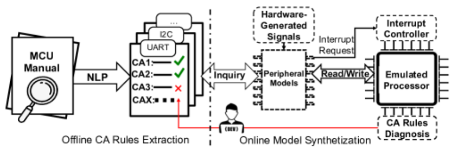
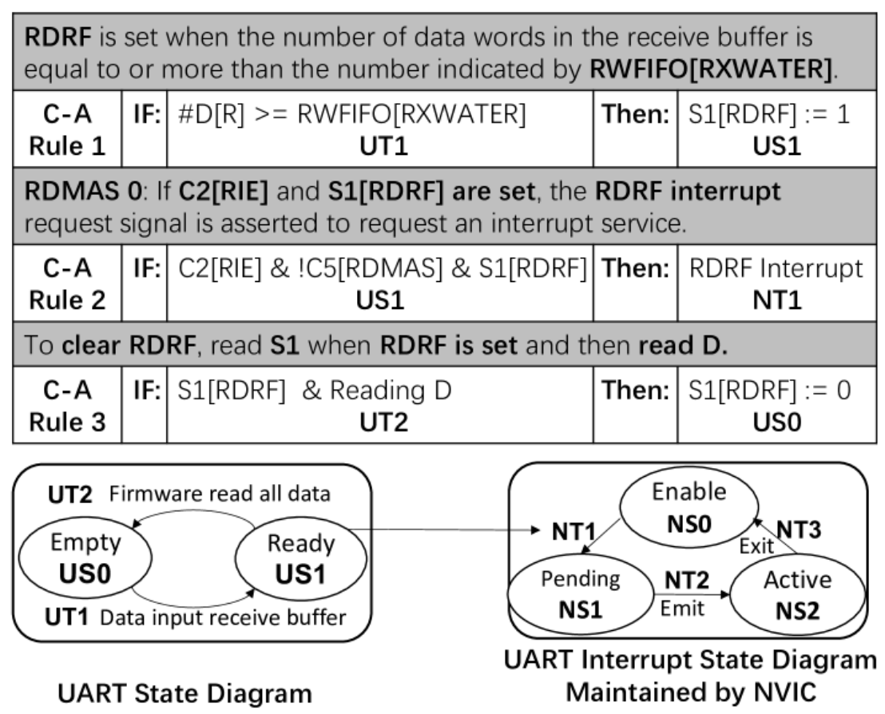
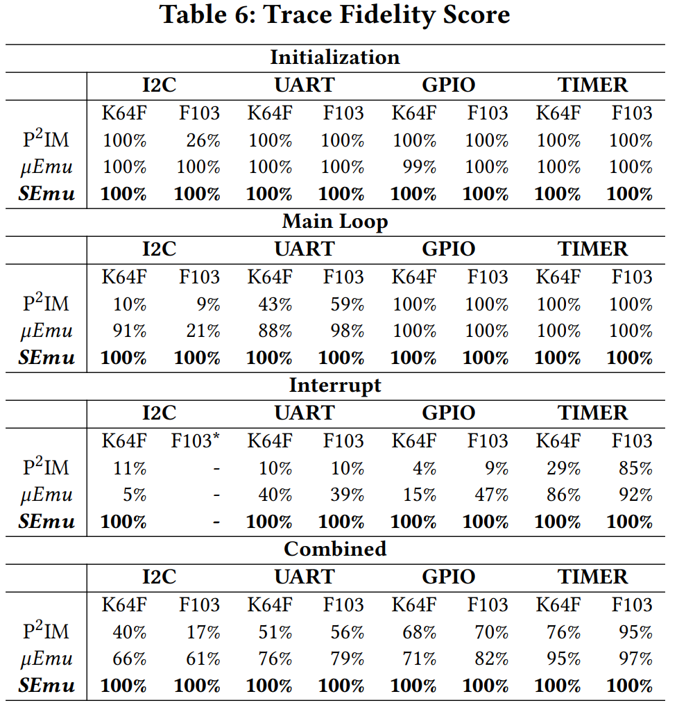
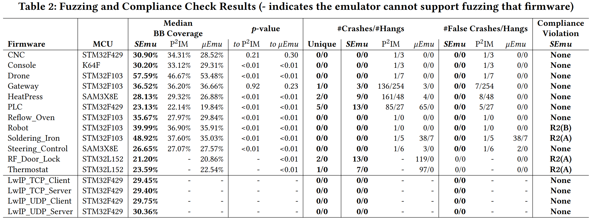
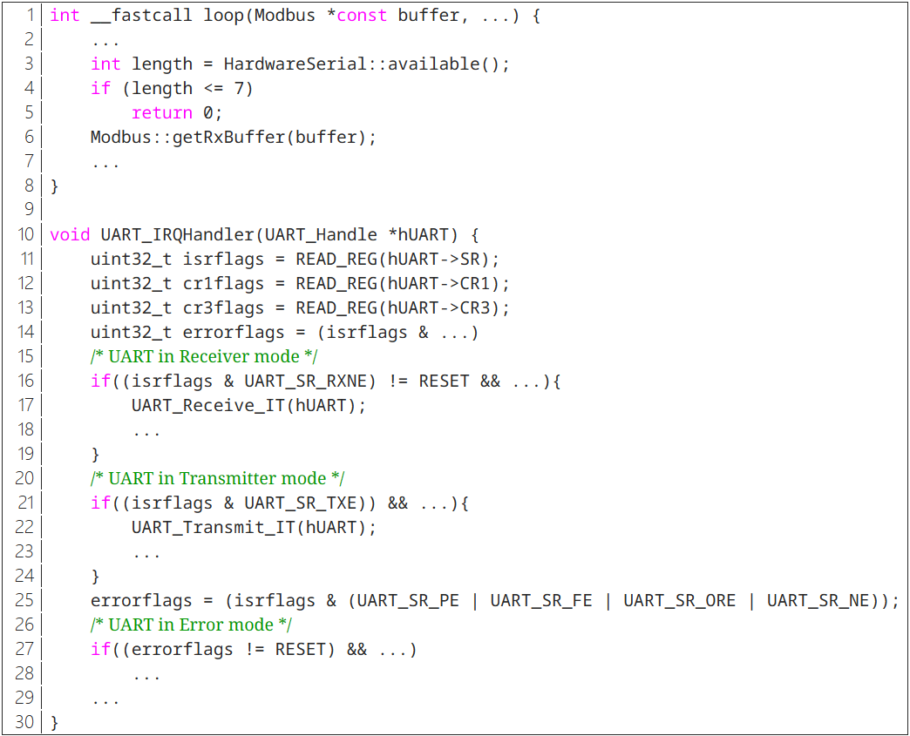
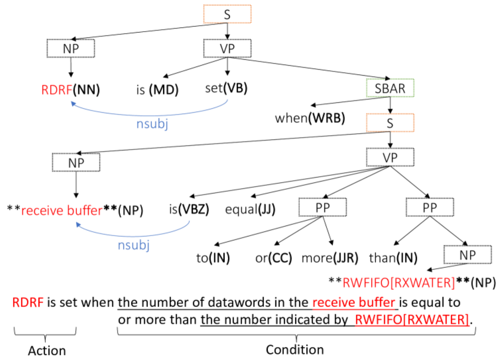
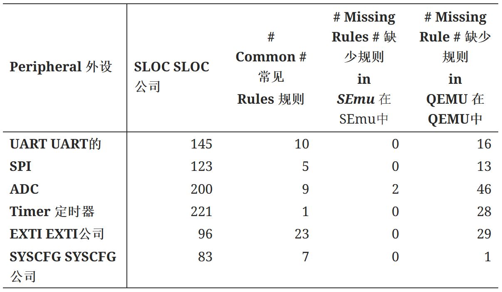
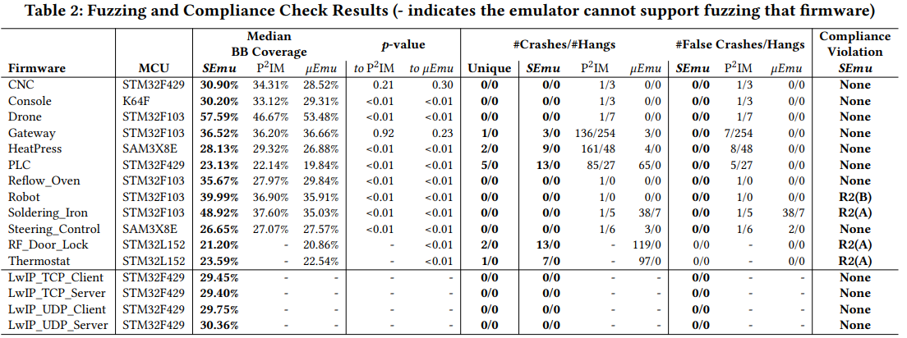

文章题目：What Your Firmware Tells You Is Not How You Should Emulate It: A Specification-Guided Approach for Firmware Emulation
文章链接：https://arxiv.org/abs/2208.07833
检测工具类别（标号：29）
请回答问题：
论文目标检测的安全问题是什么以及安全假设(Thread Model理解翻译)？
论文提出的工具或者方法相比于之前的工具关键优势是什么？(多个指标对比类别需要列表翻译)(需要引用相应的参考文献)
工具设计的主要技术难点以及主要方法概述 (插入架构图的请截图或重画)
工具实验对比结果有哪些项？每项实验设计的目的是什么？测试用例来自哪里？每项实验如果是对比其他工具的实验说明最好和最差是哪一个测试用例？原因是什么？如果是自身工具指标测试，说明指标中表现最好和最差是哪一测试用例？原因是什么？
你自己认为该工具存在什么问题?
论文阅读心得
论文目标检测的安全问题是什么以及安全假设(Thread Model理解翻译)？
文章主要集中在介绍一种基于外设规格指导的固件仿真方法，这种方法使用自然语言处理（NLP）技术从芯片手册中提取条件-动作（C-A）规则，以动态地合成外设模型，从而提高固件仿真的准确性和保真度。
由于固件代码和物理外设之间的高耦合性，物联网设备通常在现实世界中作为一个整体进行测试。但是，涉及实际外设可能会使固件和设备的可扩展（例如，扩展到数千家供应商和数百万个外围设备）安全分析变得更加困难。为了便于进行大规模动态固件分析，必须进行不依赖任何硬件的全系统仿真。
而固件仿真面临的一个主要问题就是该如何对未知外设的行为进行建模，特别是当固件读取外设寄存器时如何生成合适的响应？
许多现有的动态安全分析方法都可以在不涉及实际硬件的情况下实现在 PC 上重新托管固件。这些研究采用的理念都是仿真器应生成满足固件期望的响应，以便它不会崩溃或挂起。从这个意义上说，这种方法就是试图从固件本身学习知识。这种方法被称为固件引导解决方案。例如，在仿真器中执行目标固件时，通过观察外设访问模式来自动构建外设模型；使用符号执行来探索固件以找到令人满意的响应值。这些固件引导的解决方案仅仅在近似模拟固件，因此当输入空间变大时，会遇到低保真度问题。
同时，固件引导解决方案会面临另外一个严重问题——固件有时包含不完整信息甚至具有误导性的信息。这些不良信息最终会导致生成的外设模型不正确。更一般地说，现有方法仅从固件中学习粗粒度的静态外设模型。
不完整和误导性的信息会导致严重的低保真度问题，从而影响基于仿真器构建的固件分析工具的有效性、效率和适用性。
有效性： 复杂外设的驱动程序代码无法正确仿真。这将把大量真实世界的固件排除在动态分析之外。例如，现有工作都无法模糊具有以太网功能的固件。
效率： 即使目标固件可以仿真，其执行轨迹也可能与真实硬件上的执行轨迹有很大偏差。这会带来不可忽略的假阳性（即在不可行的路径上发现不存在的错误）和假阴性（即由于代码覆盖率缺失而无法发现真正的错误）。此外，无法准确提供中断会导致仿真进度缓慢。
适用性： 低保真仿真也限制了可采用的动态分析类型，这导致了固件仿真的所有相关工作都仅限于模糊测试，因为模糊测试可以接受不准确的仿真(Feng et al., 2020； Cao et al., 2020； Zhou et al., 2021； Johnson et al., 2021； Scharnowski et al., 2022)。
论文提出的工具或者方法相比于之前的工具关键优势是什么？(多个指标对比类别需要列表翻译)(需要引用相应的参考文献)
上述固件仿真中存在的问题及其解决方案的局限性催生了本文对于采取不同仿真方法的高保真仿真器的研究。本文提出了一种与现有的固件仿真解决方案不同的，基于规范引导的仿真方法SEmu。
SEmu的工作流程通常包括以下几个步骤：
从手册中提取规则：SEmu使用NLP技术解析芯片参考手册中的文本，自动提取描述外设行为的C-A规则。主要过程包含以下内容：
C-A规则提取
通过命名实体收集相关句子
识别共引用
识别条件和操作
C-A 规则表示
动态合成外设模型：在固件执行期间，SEmu根据提取的规则动态地构建每个外设的行为模型。
运行时执行规则：SEmu在运行时适当地执行和链接这些C-A规则，以模拟固件与硬件外设的交互。
规则诊断与修正：SEmu还包括一个机制来诊断和修正提取的规则，以确保仿真的准确性。
提高仿真保真度：通过这种方法，SEmu能够实现比传统固件引导的仿真方法更高的仿真保真度。
支持安全分析：SEmu的高保真度仿真为固件的安全分析，如模糊测试和合规性检查，提供了坚实的基础。
SEmu作为一种仿真方法，其创新之处在于它依赖于芯片的技术规格来指导仿真，而不是依赖于固件本身可能不完整或误导的信息。这使得SEmu在固件分析和测试中具有更高的准确性和效率，如下图所示。

现有的固件仿真解决方案以目标固件推断的知识为指导，而新的以 C-A 规则指导仿真器SEmu，使仿真更加精确。SEmu可以仿真更复杂的固件，更高效地运行动态分析，并应用于更精确的分析任务（例如，文章中提到的基于规范的合规性检查）。
工具设计的主要技术难点以及主要方法概述 (插入架构图的请截图或重画)
微控制器芯片供应商通常会为每个芯片发布基于文本的参考手册，其中使用自然语言（尤其是英语）来描述外设行为。与用于描述状态图的格式化语言或表格相比，芯片手册中使用的语言更加随意。例如，芯片手册中存在许多类似于 “如果寄存器 reg_A 的值等于 X，那么寄存器 reg_B 将被赋值 Y ”的句子。
一方面，这些临时句子等同于描述与状态图相同的外设行为。事实上，开发人员通常会阅读和理解手册，然后构建状态机来实现驱动程序或仿真器后端。另一方面，将这些临时句子自动合成状态图是不可能的。
但是，芯片手册中的单个句子可以很容易地被现代自然语言处理（NLP）引擎理解，并被形式化为一些简单的条件-动作（C-A）规则。这使得可以在不显式维护状态机的情况下，仅仅通过执行这些C-A规则来模拟外围设备。
基于上述观察结果，作者提出了利用外设规范，特别是芯片参考手册来模拟外设行为的固件仿真方法。这将从根本上解决与前面提到的现有固件引导仿真解决方案相关的问题（即固件中包含的不完整和误导性信息）。
那么该如何得到条件-动作（C-A）规则呢？虽然参考手册（主要是 PDF 格式）是非结构化数据，但其格式和文本都有可观察到的特征。因此，NLP 技术可用于理解自然表达的句子，并从芯片手册中提取条件-动作逻辑。更具体地说，NLP 技术可以通过识别名词和动词短语来识别相关的注册表和字段，通过句子结构和连接词找出条件和动作之间的因果关系，并根据词对之间的关系推断句子的语义。
已经有很多研究者在这方面做出了极具帮助的贡献：
芯片手册包含数千个句子，其中许多与任何有意义的 C-A 规则无关，应该过滤掉。为了收集相关句子，作者利用命名实体。首先确定一组重要的命名实体。基于它们，直接匹配句子中的出现次数以收集相关句子。在识别所有的共同引用之后 NLP 引擎为在线模型合成模块输出 C-A 规则的正式表示。整个过程依赖于Stanford Constituency Parser (Zhu et al., 2013) 和Stanford Dependency Parser (Chen and Manning, 2014)。

上表列出了摘自 K64F 系列芯片原始参考手册（NXP，2014b）的三句话以及从中提取的 C-A 规则。突出显示了这些句子中的主要主语/宾语。在的 NLP 引擎中，它们是指定条件或操作的命名实体。在底部，显示了通过阅读手册手动构建的状态图，这是开发人员以传统方式实现外设驱动程序的重要步骤。
C-A 规则 1 指出，如果满足条件“#D[R] ¿= RWFIFO[RXWATER]”（UT1），则将调用操作“S1[RDRF] ：= 1”（US1）。请注意此 C-A 规则如何对应于 UART 状态图的边 UT1 和节点 US1。该操作将值 1 分配给寄存器字段 S1[RDRF]，这反过来又使 C-A 规则 2 的条件为 true （US1）。由于相应的操作 （NT1） 而生成 UART 中断。它使 UART 中断挂起 （NS1）。请注意，此操作具有跨外设效应，会影响 Arm 的内置中断管理外设 NVIC 的状态机。C-A 规则 3 与接收数据有关。
可以看出，通过简单地检查、执行和链接每个 C-A 规则，可以获得由手动构建的状态图控制的状态转换的相同结果。
由于手册的文档记录不多以及 NLP 引擎本身的局限性，偶尔会出现缺失或错误的 C-A 规则，从而导致外设建模不准确。可以通过 𝜇Emu (Zhou et al., 2021) 中提出的无效引导仿真来快速诊断根本原因。如果 C-A 规则缺失或错误，则仿真很可能会进入无效状态。如果发生这种情况，则使用符号执行来快速识别哪个外设读取操作导致错误，并相应地修复 C-A 规则。然而，在找到根本原因方面，需要付出大量的人力努力。
这种基于NLP的方法和无效引导仿真是相辅相成的。如果存在缺失/错误的 C-A 规则，无效引导仿真可以帮助快速找到它。但是仅有 𝜇Emu 这样的无效引导仿真无法解决“固件中包含的不完整和误导性信息”问题。具体来说，符号执行非常擅长推理仿真失败的根本原因。失败的仿真通常会导致无效的执行状态（例如，停顿或崩溃），符号执行可以帮助作者快速定位外设读数的不正确响应。
对于目标外设，首先准备一个固件样本和一个有效的测试用例，该测试用例可以正确执行固件。这可以在真实设备上进行验证。然后，在 SEmu 上运行此示例，并收集合成的外围模型生成的具体响应。这些具体响应被输入到符号执行引擎，并用于指导符号执行选择分支，类似于 S2E (Cyberhaven, 2022) 中实现的 concolic 模式。如果检测到无效状态，一定是由于错误的 C-A 规则造成的，因为作者专门选择了不触发任何无效状态的固件示例和测试用例。由于遇到无效状态，因此外围模型先前的响应之一一定是错误的。取最后一个条件语句中的另一个分支，并求解相应的符号变量。这个符号变量指示错误建模的寄存器的地址。然后进一步将模型生成的错误值与符号执行引擎求解的错误值进行比较，以识别不正确的位。最后，以相反的顺序列出了与此字段相关的所有已执行的 C-A 规则，让人工参与进来确认错误的规则。诊断是一个迭代过程。 在每一轮中，它都会修复一个 C-A 规则，直到可以正确模拟使用的固件。
在获得足够多的 C-A 规则后，仿真器在运行时为固件执行过程中访问的每个外设动态合成一个模型。具体来说，每个外设模型都代表相应的硬件提供适当的响应。与此同时，仿真器按正确的顺序选择性地执行某些相关的 C-A 规则，从而保持外设的状态。根据经验研究，执行这些规则会隐式地维护相应的状态机。在处理下一个固件请求时，所保持的状态将反过来帮助模型选择正确的 C-A 规则子集。
工具实验对比结果有哪些项？每项实验设计的目的是什么？测试用例来自哪里？每项实验如果是对比其他工具的实验说明最好和最差是哪一个测试用例？原因是什么？如果是自身工具指标测试，说明指标中表现最好和最差是哪一测试用例？原因是什么？
使用了原始的条件-动作（C-A）规则来构建外设模型，并对66个单元测试样本进行测试。这些测试样本来自于P2IM论文 (Feng et al., 2020) 中发布的，它们运行在三种不同的芯片上，覆盖了各种外设和操作系统库。在这些测试案例中，P2IM和𝜇Emu分别达到了83%和95%的通过率。
但是在固件启动期间，仿真器SEmu无法正确运行这些单元测试的时钟配置。具体来说，STM32F103 上的 RCC、K64 上的 MCG 和 SAM3X 上的 PMC 的原始 C-A 规则无法为这些外围设备构建可用的模型。由于这些外设提供的时钟源属于不可绕过的启动槽，因此根据原始 C-A 规则建立的模型无法通过所有单元测试。
不过，就单个外设而言，原始 C-A 规则无需增强即可正确用于大多数其他外设。修改时钟相关规则后，SEmu 达到了 96.97% 的通过率。只有两个 F103 I2C 单元测试无法通过。这主要是由于NLP技术的局限性以及不可避免的模棱两可甚至错误的硬件描述。
作者虽然无法从根本上解决NLP技术的局限性以及手册中的语言描述问题，但是可以通过他们开发的一种利用符号执行辅助诊断的工具，快速找出哪个规则不正确，然后手动增强规则。
通过增强的规则，特别是与时钟相关的规则，重新运行了 P2IM 的 66 个单元测试样本。SEmu 的通过率达到 100%。此外，作者还收集了 17 个新样本，这些样本代表了真实世界的应用或具有多个外设和多种工作模式（如 DMA）的更复杂的演示程序。例如，PinLock 固件在智能锁上运行，智能锁通过 UART 接口读取 PIN 码，对其进行哈希处理以与已知哈希进行比较，并在 PIN 正确时发送信号以解锁数字锁。
为了评估SEmu使用的C-A（条件-动作）规则与芯片手册中的描述的一致性或忠实度，进行了另外一个对比试验。
为了评估C-A规则的忠实度，需要一个基准或“真实情况”。理论上，这可以通过手动检查外设相关的所有句子来构建，但这样做既繁琐又可能受到个人理解的影响。为了避免可能的偏见，作者选择了使用QEMU开发者已经实现的可用外设模型作为“真实情况”的来源。QEMU是一个开源的处理器模拟器，它包含了用C语言编写的外设模型。这些模型实现了模拟固件所需的基本外设逻辑，避免了原始手册中大量无关句子的干扰。
作者手动检查了QEMU的C语言源代码，并将其逻辑翻译成与SEmu使用的相同格式的C-A规则。文中提到了一个具体的例子，即STM32F405 UART后端仿真器的代码片段。如果C语言的语句可以转换为C-A规则，作者会在该行代码旁边注释上相应的规则。
最后，作者将SEmu生成的C-A规则与从QEMU派生的“真实情况”进行比较，两个规则集之间存在大量重叠。这些重叠部分代表了最重要的外设逻辑。另一方面，QEMU 中有很多缺失的规则。主要原因是QEMU无法实现许多非标准的外设功能。
使用来自 P2IM 的单元测试样本来评估仿真保真度，并将 SEmu 与 𝜇Emu 和 P2IM 上的保真度进行比较，因为这些样本大多得到所有相关工作的支持。
为了定量测量仿真保真度，作者提出了一个新指标来指示执行跟踪之间的相似性。具体而言，作者使用真实设备上的执行轨迹作为参考。对于跟踪的每个部分，作者使用编辑距离来测量相似性。
作者使用编辑距离的方法来测量相似性。具体来说，整个跟踪呈现为一系列地址，这些地址对应于每个基本块的开头。与真实设备的跟踪相比，删除操作意味着仿真器错误地获取了额外的基本块；插入操作意味着仿真器错过了基本的块执行；替换操作意味着仿真器执行不同的基本块。需要的操作越少，两条迹线的相似度就越高。
整个跟踪呈现为一系列地址，这些地址对应于每个基本块的开头。与真实设备的跟踪相比:
删除操作意味着仿真器错误地获取了额外的基本块
插入操作意味着仿真器错过了基本的块执行
替换操作意味着仿真器执行不同的基本块
需要的操作越少，两条迹线的相似度就越高。
在原始的编辑距离算法中，删除、插入和替换的权重相同。然而，在作者的例子中，删除或插入重复的序列被认为不那么重要。事实上，与重复以前的跟踪相比，缺少一些代码执行或执行一些错误的代码通常对固件分析的影响更严重。例如，固件通常在轮询模式下运行，该模式等待状态寄存器的某个值。无论是运行 100 个循环还是 1,000 个循环都不会有效影响固件分析。因此，作者将重复删除或插入操作的权重分配给 1，而将其他操作分配给 2。
仿真器和真实设备之间的迹线距离由下式计算：
𝐷𝑖𝑛𝑖𝑡 、 𝐷𝑚𝑎𝑖𝑛 和 𝐷𝑖𝑟𝑞 是前面提到的三个部分的迹线的修改编辑距离。
最后，作者将测量的距离归一化为一个介于 0 到 1 之间的数字来表示保真度分数，其中 1 是最相似的（即短距离）。
模拟器的保真度分数可以通过以下公式计算：
其中 𝐷𝑄𝐸𝑀𝑈 是在未修改的 QEMU 上测量的编辑距离。
此处表示最坏情况的仿真结果， 𝐷𝑄𝐸𝑀𝑈 因为未提供外设仿真。可以看出，如果 𝐷𝐸𝑚𝑢𝑙𝑎𝑡𝑜𝑟 足够低，保真度分数将为 1。如果 𝐷𝐸𝑚𝑢𝑙𝑎𝑡𝑜𝑟 等于或大于 𝐷𝑄𝐸𝑀𝑈 ，则保真度分数将为 0。否则，保真度分数的范围为 0 到 1。
在 I2C、UART、GPIO 和 Timer 单元测试样本中跟踪的三个部分的保真度分数细分如下图所示：

在作者给出的保真度指标下，SEmu 是唯一在测试样本中获得满分的指标。
第五个对比试验是评估 SEmu 的模糊测试。测试的固件包括 P2IM (Feng, 2021) 中使用的 10 个样本和 Pretender (Gustafson and Schloegel, 2021) 中使用的 2 个复杂样本。作者还添加了 4 个新示例，这些示例使用 LwIP over Ethernet 作为网络层协议，通过 TCP 和 UDP 执行网络通信。它们是基于STM32F429芯片的演示代码开发的。
作者集成了修改后的 AFL 作为模糊测试引擎。由于模糊测试的随机性，作者对每个测试样本进行了 5 次 24 小时模糊测试的试验，以使实验符合社区指南 (Klees et al., 2018) 。作者使用与每个测试目标（P2IM、 𝜇Emu、SEmu）相同的初始种子的随机值。在适用的情况下，作者使用了与已发布的工具一起发布的默认配置。
模糊测试的结果如下图所示：

作者观察到，在Soldering_Iron和四个TCP/UDP样本中，与P2IM和 𝜇Emu相比，代码覆盖率有了明显的提高。原因是 P2IM 和 𝜇Emu 都不支持 DMA，因此也不支持以太网。虽然 𝜇Emu 能够完成以太网样本的初始化，但它未能涵盖依赖 DMA 进行数据传输的主要固件逻辑。对于可以测试的固件，SEmu 的代码覆盖率平均分别比 P2IM 和 𝜇Emu 高出 5.1% 和 6.7%。
覆盖率的提高似乎微不足道。然而，作者注意到 SEmu 实现了更好的路径保真度，因此没有探索很多错误处理函数。例如，一些外设（如 I2C）使用两个分离的中断来处理正常和错误信号。错误中断仅在硬件故障时发生。但是，P2IM 和 𝜇Emu 仍然会定期触发这些错误中断，这不应该在不发生物理故障的情况下发生。此外，SEmu 只对实际的 I/O 接口进行模糊处理，而对现有工作也进行模糊处理的状态/控制寄存器。由于这些原因，SEmu 在某些固件（例如 Steering_Control）上实现的代码覆盖率较低。作者认为这是更高仿真保真度的一个很好的指标。
在上图中，作者在 #Crashes/#Hangs 列中列出了 AFL 报告的崩溃和挂起次数。为了验证结果，对于每个报告的崩溃/挂起，作者将触发器测试用例重播到相应的模拟器，并收集执行跟踪。如果两个执行跟踪相同，则将其视为重复。如果作者在重播期间没有观察到崩溃/挂起报告，作者会将其视为误报。作者在标题为 Unique 的列中列出唯一的崩溃/挂起，并在标题为 Crashes/Hangs 的列中列出错误的崩溃/挂起 #False 数。
SEmu 成功地重现了之前工作中提到的所有错误，但没有报告任何错误的崩溃或挂起。事实上，在现有工作中提出的许多崩溃报告都是重复的或误报的。原因有两方面。首先，现有工作会随机提供中断，这会导致遭受相同崩溃的两个执行的边缘覆盖范围发生重大变化。因此，AFL会错误地将它们识别为两个不同的崩溃。其次，如前所述，由于P2IM和𝜇Emu的仿真不准确，许多不可行的路径正在探索中，导致大量误报的发生。
合规性检查测试是为了评估SEmu在执行基于规格的合规性检查时的能力。这种检查的目的是验证固件中的外设驱动实现是否符合芯片手册中规定的逻辑。
作者实现了两个动态合规性检查规则：
R1：固件在访问某些寄存器之前，应该先检查另一个寄存器的状态。这适用于许多I/O操作。
R2：为了启用中断，固件不仅需要在本地外设控制器中激活中断配置，还需要在全局中断管理器（通常是NVIC）中启用相应的中断源。
在使用相同固件样本进行测试的过程中，在 SAM3X HAL 驱动程序代码中观察到几个 R1 冲突。我们后来证实，根本原因是外设访问的竞争条件。例如，SAM3X MCU的UART驱动代码在数据传输前检查TXRDY字段。但是，它还允许在 TXRDY 验证和数据传输之间发生 UART 中断，在此期间，中断处理程序进行独立的数据传输。当中断返回时，之前的 TXRDY 验证将失效，并且以下数据传输将失败。我们在 STMF103 MCU 上的 SPI 单元测试示例中发现了类似的问题。
这个测试不是在不同的仿真工具或方法之间进行比较，而是将SEmu作为工具，将其分析结果与芯片手册中的“地面真实”（ground-truth）进行比较，以评估SEmu在执行合规性检查任务时的准确性和有效性。
你自己认为该工具存在什么问题?
本人对MCU仿真乃至整个MCU领域都不是太熟悉，斗胆列出自己对于文章中SEmu可能会面临的问题的猜想：
自然语言处理（NLP）技术可能在处理复杂的技术手册内容时遇到难题，尤其是当文档中存在模糊不清或含糊的表述时。
芯片制造商可能会更新他们的产品规格，SEmu需要能够适应这些变化，以确保仿真的准确性。
尽管SEmu自动化了许多过程，但在某些情况下，如C-A规则的诊断和修正，可能仍然需要人工干预，这可能会增加用户的负担。以及自动诊断C-A规则错误的过程可能需要进一步的验证，以确保不会引入新的问题。
SEmu测试用例是不是相对比较少？仅仅在已经公布的测试集和自己加入的测试集中取得了不错的成绩。但是这种优异表现是否具有普遍性？是不是绝大多数固件仿真都可以在 SEmu 的方式下取得更好的成绩？
论文阅读心得
这篇论文展示了固件仿真与自然语言处理（NLP）技术结合的潜力。通过将NLP应用于技术手册的解析，SEmu能够自动化地从芯片手册中提取关键信息，这让我意识到跨学科知识的重要性。
SEmu提出了一种新颖的方法来解决固件仿真中的挑战，即通过规格引导而非固件引导来实现仿真。这种创新的思维方式启发我在面对问题时，要勇于跳出传统思维模式，寻找新的解决方案。
论文详细介绍了SEmu的工作原理，包括如何从芯片手册中提取条件-动作（C-A）规则，以及如何动态合成外设模型。这让我认识到在技术研究中，对细节的深入理解和精确操作的重要性。同时，论文中提到的SEmu工具在提高固件仿真保真度、减少误报、以及执行合规性检查方面的潜力，让我看到了理论研究向实用工具转化的价值。
通过阅读论文中的评估部分，我学习到了如何系统地测试和验证一个工具的有效性，包括如何设计实验、收集数据和进行比较分析。同时，我也学习到了如何利用文字表达清楚自己的想法、创新点、验证思路和其他技术细节。
由于缺乏外设模型，仿真微控制器的固件具有挑战性。
现有工作通过分析目标固件来了解如何响应外设读取操作。这是有问题的，因为固件有时不包含足够的线索来支持仿真，甚至包含误导性信息（例如，有问题的固件）。
我们提出了一种从外设规范构建外设模型的新方法。
使用NLP，我们将人类语言中的外围行为（记录在芯片手册中）转换为一组结构化的条件-动作规则。通过在运行时检查、执行和链接它们，我们可以为每个固件执行动态合成一个外设模型。
提取的条件操作规则可能不完整，甚至错误。因此，我们建议结合符号执行来快速查明根本原因。这有助于我们手动纠正有问题的规则。
我们已经实现了我们的想法，适用于横跨三个不同芯片供应商的五个流行的MCU板。使用一种新的基于编辑距离的算法来计算迹线差异，我们对大型固件语料库的评估证实，与最先进的解决方案相比，我们的原型实现了更高的保真度。
得益于准确的仿真，我们的仿真器有效地避免了在现有模糊测试工作中观察到的误报。
我们还设计了一种新的动态分析方法，用于根据规范执行驱动程序代码合规性检查。
我们发现了一些不合规之处，后来我们确认这是由竞争条件引起的错误。
微控制器单元 （MCU） 是资源受限的小型 SoC（片上系统），可驱动许多安全和安全关键应用领域，例如智能家居、移动机器人和医疗保健。随着物联网 （IoT） 技术的出现，基于 MCU 的物联网设备的安全分析（例如，错误发现、污点分析、策略违规检测）变得越来越重要。
由于固件代码和物理外设之间的紧密耦合，物联网设备通常在现实世界中作为一个整体进行测试。
但是，涉及实际外设可能会使固件和设备的可扩展（例如，扩展到数千家供应商和数百万个外围设备）安全分析变得更加困难。
通过在 PC 上重新托管固件，许多现有的动态安全分析方法都可以在不涉及实际硬件的情况下实现。
固件仿真的一个主要挑战是对未知外设的行为进行建模。
特别是，当固件读取外设寄存器时，我们如何生成适当的响应？
现有工作采用的一个常见理念是，仿真器应生成满足固件期望的响应，以便它不会崩溃或挂起。从这个意义上说，他们试图从固件本身学习知识（关于未知外围设备）。我们称此工作线为固件引导解决方案。
例如，在仿真器中执行目标固件时，通过观察外设访问模式来自动构建外设模型；使用符号执行来探索固件以找到令人满意的响应值。
但是，固件有时包含不完整甚至误导性的信息。
对于正式的，以中断的时间为例。现有的仿真器不知道应该在特定时间传递哪个中断。更一般地说，现有方法仅从固件中学习粗粒度的静态外设模型。
我们将通过具体示例简要说明缺失的信息（未包含在固件中）和负面影响（参见第 3.1 节）。
固件本身包含内存错误，则现有的仿真器 𝜇Emu 会尽量避免执行包含它的代码，这是错误的仿真
P2IM报告了由于误导性的访问模式而导致的许多寄存器错误分类，最终导致不正确的外设模型
不完整和误导性的信息会导致严重的低保真度问题，从而影响基于仿真器构建的固件分析工具的有效性、效率和适用性。
有效性：无法正确模拟复杂外设的驱动代码。这将在动态分析中排除大量真实世界的固件。例如，现有的任何工作都无法模糊固件与以太网功能。
效率：即使可以模拟目标固件，执行轨迹也可能与真实硬件上的执行轨迹有很大差异。这引入了不可忽略的误报（即，在不可行路径上找到不存在的错误）和漏报（即，由于缺少代码覆盖而无法找到真正的错误）。此外，如果不能准确地提供中断，仿真进度会变慢
适用性：低保真仿真也限制了可以采用的动态分析类型。事实上，我们观察到固件仿真的所有相关工作都仅限于模糊测试，因为模糊测试可以自然容忍不准确的仿真——无论如何，人类都必须手动确认错误。高保真仿真器可以推进除模糊测试之外的新安全分析应用程序。
在论文的引言部分提到的“低保真仿真”（low fidelity emulation）是指在模拟微控制器固件执行过程中，仿真器无法精确地复现固件与硬件外设之间的真实交互。这种情况通常发生在以下几个方面：
行为模拟不足：仿真器可能无法准确模拟外设的所有行为，包括响应时间、状态转换和错误处理等。
信息不完整或误导：固件本身可能不包含足够的信息来支持完整的仿真，或者可能包含错误的信息，导致仿真器生成不准确的外设响应。
状态机缺失：现有的仿真方法可能无法构建一个完整的状态机来模拟外设的所有可能状态和状态转换，导致仿真器在处理复杂的外设交互时出现偏差。
性能问题：低保真仿真可能会导致固件分析工具在执行时效率低下，例如，由于无法准确触发中断，仿真器可能需要更长的时间来模拟固件的执行。
分析限制：低保真仿真限制了可以采用的动态分析类型。例如，模糊测试（fuzz testing）可能需要较高的仿真保真度来有效地发现固件中的潜在错误。
错误处理：在低保真仿真中，仿真器可能无法正确处理固件中的异常流程，如错误恢复或非正常退出。
代码覆盖率：由于仿真的不准确，可能无法达到真实的硬件上执行时的代码覆盖率，这意味着某些代码路径可能未被测试到，从而遗漏了可能存在的安全漏洞。
在论文中，作者指出低保真仿真对于固件分析工具的有效性、效率和适用性都有负面影响。为了解决这些问题，作者提出了一种新的规格引导的仿真方法，该方法通过使用自然语言处理技术从芯片手册中提取条件-动作规则，以提高仿真的准确性和保真度。
现有的固件仿真解决方案是以从目标固件中推断出的知识为指导，与之不同的是，我们提出了以规范为指导的仿真。规范以一种原则性的方式指导仿真器，使仿真更加精确。因此，这种方法可以仿真更复杂的固件，更高效地运行动态分析，并应用于更精确的分析任务（例如，我们原型中基于规范的合规性检查）。
要指定外设电路的行为，状态图和状态表是事实上的标准（Sing，2021 年）。事实上，我们经常看到使用有限状态机来实现固件中的外设驱动程序和仿真器中的外设后端。遗憾的是，除了在内部设计阶段，基于状态图的外设规范并没有被广泛采用，而这种规范可以直接用形式化方法进行解释（Fasano 等人，2021 年）。
相反，微控制器芯片供应商通常会为每个芯片发布基于文本的参考手册，其中使用自然语言（尤其是英语）来描述外设行为。与用于描述状态图的格式化语言或表格相比，芯片手册中使用的语言更加随意。例如，我们发现许多类似于 “如果寄存器 reg_A 的值等于 X，那么寄存器 reg_B 将被赋值 Y ”的句子。一方面，这些临时句子等同于描述与状态图相同的外设行为。事实上，开发人员通常会阅读和理解手册，然后构建状态机来实现驱动程序或仿真器后端。另一方面，将这些临时句子自动合成状态图是非常困难的，甚至是不可能的。
这段话讨论了在微控制器单元（MCU）的设计和仿真中，如何通过使用自然语言描述的参考手册来规范外设的行为，以及这种描述方式与形式化的状态图之间的差异和挑战。
这项工作的目标不是自动构建状态机以在仿真器中实现外设后端的雄心勃勃的目标。
但是，我们有以下观察结果，可以帮助我们更准确地使用规范对外设进行建模。
芯片手册中的单个句子可以很容易地被现代自然语言处理（NLP）引擎理解，并被形式化为一些简单的条件-动作（C-A）规则
在不显式维护状态机的情况下，战略性地执行这些C-A规则也可以模拟外围设备。
基于上述观察结果，我们建议利用外设规范，特别是芯片参考手册来模拟外设行为。
生成的模型以独立于模拟固件的特定硬件为目标。
这将从根本上解决与前面提到的现有固件引导仿真解决方案相关的问题（即固件中包含的不完整和误导性信息）。
这段话强调了通过直接利用芯片参考手册中的规格信息来创建外设模型的方法，这种方法可以提高固件仿真的准确性，并解决由于固件中的不准确信息导致的潜在问题。这对于开发高质量的仿真器和进行深入的固件安全分析非常有价值。
这段话的中文翻译是：
基于上述观察，我们提出利用外设规格，特别是芯片参考手册来模拟外设行为。生成的模型针对特定的硬件，与被仿真的固件无关。这将从根本上解决之前提到的现有固件引导仿真解决方案所面临的问题（即固件中包含的不完整和误导性信息）。
详细解释如下：
外设规格的重要性：在微控制器的设计和开发中，外设（如UART、SPI、I2C等）是芯片与外部世界交互的关键接口。外设的行为通常由芯片制造商提供的规格或参考手册定义，这些手册详细描述了外设的工作原理和操作方式。
利用参考手册建模：作者提出使用这些参考手册中的规格信息来创建外设的行为模型。这意味着，不是依赖于固件中的代码来推断外设的行为，而是直接从权威的技术文档中提取必要的信息。
独立于固件的硬件模型：通过使用参考手册，生成的外设模型与固件的具体实现细节无关。这是因为模型基于硬件的规格，而不是固件对硬件的特定使用方式。
解决现有仿真问题：传统的固件引导仿真方法可能会受到固件中不完整或错误信息的影响，导致仿真结果不准确。而基于规格的建模方法可以避免这些问题，因为它不依赖于固件中的信息，而是依赖于硬件的官方规格。
提高仿真的准确性：通过这种方式，仿真器可以更准确地模拟外设的行为，因为它们是基于芯片制造商提供的准确和权威的技术文档构建的。
对安全分析的意义：准确的外设行为模型对于进行有效的安全分析至关重要，因为它们可以确保安全测试和分析基于正确的硬件行为假设。
总的来说，这段话强调了通过直接利用芯片参考手册中的规格信息来创建外设模型的方法，这种方法可以提高固件仿真的准确性，并解决由于固件中的不准确信息导致的潜在问题。这对于开发高质量的仿真器和进行深入的固件安全分析非常有价值。
在获得足够的 C-A 规则后，在运行时，我们为固件执行期间访问的每个外设动态合成一个模型。具体而言，每个外设模型都代表相应的硬件提供适当的响应。
同时，我们通过有选择地以正确的顺序执行某些相关的 C-A 规则来保持外围设备的状态。
根据我们的实证研究，执行这些规则隐式维护相应的状态机。在第 3.2 节中，我们展示了一个 UART 外设的直观示例。维护状态反过来将帮助模型在处理下一个固件请求时选择正确的（子集）C-A 规则。
由于手册的文档记录不多以及 NLP 引擎本身的局限性，我们偶尔会观察到缺失或错误的 C-A 规则，从而导致外设建模不准确。为了解决这个问题，我们结合了 𝜇Emu （周等人，2021）中提出的无效引导仿真来快速诊断根本原因。
直观地说，如果 C-A 规则缺失或错误，则仿真很可能会进入无效状态。如果发生这种情况，我们使用符号执行来快速识别哪个外设读取操作导致错误，并相应地修复 C-A 规则。
值得注意的是，我们基于NLP的方法和无效引导的仿真是相辅相成的。如果存在缺失/错误的 C-A 规则，无效引导仿真可以帮助快速找到它。但是，由于我们之前提到的原因，仅像 𝜇Emu 这样的无效引导仿真无法解决“固件中包含的不完整和误导性信息”问题。具体来说， 𝜇Emu 不知道何时发出中断，非崩溃执行不能保证数据的正确性。
我们用一个名为SEmu（规范引导的EMUlator）的原型实现了所提出的想法，并以系统的方式对其进行了评估。
SEmu从五个芯片手册中自动提取 C-A 规则:
STM32F1 （STMicroelectronics， 2021a）
TM32F4 （STMicroelectronics， 2021b）
STM32L1 （STMicroelectronics， 2020）
NXP K64 系列 （NXP， 2014b）
Atmel SMART 系列 （Microchip， 2021b）
然后我们借助无效引导仿真（周 et al.， 2021）诊断并增强结果。
总的来说，这些外设模型使我们能够测试和评估现有工作中使用的同一组固件样本（Feng 等人，2020 年;周 等人，2021 年;Gustafson 等人，2019 年）。
为了客观地将我们的解决方案与现有工作进行比较，我们开发了一种基于编辑距离的新方法来量化仿真保真度，该方法衡量仿真执行与硬件上实际执行的偏差程度。
这使我们能够模拟更复杂的外设并获得更好的模糊测试结果。
最后，我们将我们的方法应用于一个新的动态分析任务，我们称之为基于规范的合规性检查。利用从手册中提取的语义信息，它检查外设驱动程序实现是否符合芯片手册中指定的逻辑。我们发现了一些不合规之处，后来被证实是编程错误。为了进一步的研究，我们将开源我们的工具和数据集。
这段话描述了SEmu（Specification-guided EMUlator，规格引导的仿真器）原型的实现、评估以及其在固件仿真和动态分析中的应用。以下是对这段话的详细理解：
SEmu原型实现：作者实现了一个名为SEmu的原型工具，这是一个基于规格的仿真器，它利用芯片参考手册中的信息来模拟外设行为。
自动提取C-A规则：SEmu能够自动从五个不同系列的芯片手册中提取条件-动作（C-A）规则。这些芯片系列包括STMicroelectronics的STM32F1、STM32F4、STM32L1，NXP的K64系列，以及Microchip的Atmel SMART系列。
诊断和增强：通过无效性引导的仿真（invalidity-guided emulation），SEmu能够诊断提取的C-A规则的准确性，并相应地增强这些规则。这有助于提高仿真的质量和可靠性。
固件样本测试：利用SEmu生成的外设模型，作者能够测试和评估现有工作中使用的同一套固件样本。这表明SEmu能够与现有的固件分析工作兼容。
仿真保真度的量化：为了客观地比较SEmu与现有解决方案的性能，作者开发了一种基于编辑距离的新方法来量化仿真保真度。编辑距离是一种衡量仿真执行与硬件上真实执行偏差的方法。
仿真结果：通过这种量化方法，作者得出结论，SEmu在跟踪保真度方面比现有的固件引导解决方案有更好的表现。这意味着SEmu能够更准确地模拟复杂的外设行为。
模糊测试：由于SEmu的高保真度仿真，它能够产生更好的模糊测试结果。模糊测试是一种通过自动生成大量随机输入来发现软件潜在缺陷的技术。
规格基遵从性检查：SEmu还被应用于一种新的动态分析任务，称为基于规格的遵从性检查。这项检查利用从手册中提取的语义信息，来验证外设驱动程序的实现是否符合芯片手册中规定的逻辑。
发现编程错误：在遵从性检查过程中，作者发现了一些不合规的情况，这些后来被确认为编程错误。
开源计划：为了进一步的研究，作者计划开源他们开发的工具和数据集。
总的来说，这段话强调了SEmu在提高固件仿真质量和进行高级动态分析方面的能力，以及作者在评估和测试SEmu时所采取的系统化方法和开放研究资源的承诺。
在提到的“Specification-guided EMUlator”（简称SEmu）这个术语中，“Specification”指的是微控制器（MCU）的外设规格，这通常详细描述在芯片制造商提供的参考手册中。这些规格包括外设的行为、功能、状态转换、寄存器配置等技术细节，它们定义了外设如何响应不同的操作和条件。
在SEmu的上下文中，"Specification-guided"（规格引导的）意味着仿真器的设计与实现是基于这些技术规格，而不是依赖于固件代码本身来推断外设的行为。这种方法允许仿真器更准确地模拟硬件外设的行为，因为它直接使用了制造商提供的权威和详细的硬件描述。
总而言之，我们做出了以下贡献：
我们提出了规范指导的固件仿真，以更准确地仿真固件。核心技术是利用NLP技术从芯片手册中自动提取有用的C-A规则。
我们建议结合无效引导仿真来识别 SEmu 提取的缺失或错误的 C-A 规则。
为了定量评估仿真保真度，我们提出了一种基于修改后的编辑距离的新方法，用于测量跟踪相似性。
我们实现了我们的想法，并将 SEmu 生成的外设模型与 QEMU 提供的 6 个实况模型以及现有固件引导解决方案生成的自动模型进行了比较。
提取的外设行为规则使我们能够进行驱动程序代码合规性检查，并且我们发现了真正的不合规性错误。
MCU（微控制器单元）设备的主要功能是通过控制外设与外部环境交互来实现的。因此，MCU上运行的固件可以被视为外设用法的集合。
要正确操作外围设备，固件应确保外围设备在进行任何访问之前处于正确状态;否则，将发生意外行为。例如，如果外设忙于执行硬件操作（例如，模数转换器或ADC正在将外部模拟值转换为数字值），则无法响应固件功能。
为了传达如此重要的状态信息（即外设是否准备好响应某个访问请求），固件通常首先通过读取相应的状态寄存器（SR）来查询当前外设状态，SR是映射到处理器地址空间的内存（又名MMIO）。
外设还通过中断机制通知处理器（因此是固件）外部事件。通常，外部事件会导致外围设备的状态更改。此外，一些高吞吐量外设（如 I2C、USB 和以太网）可能会使用直接内存访问 （DMA） 在 RAM 和外设之间传输数据，而无需涉及 CPU。
可以看出，即使是一个简单的外设也涉及许多硬件状态。为了帮助固件开发人员了解外设行为，芯片供应商通常会为使用自然语言编写的每个芯片发布参考手册。MCU参考手册应该提供有关如何使用每个外设的基本信息，包括其寄存器、内存映射、硬件接口和行为。
由于每个外设都包含多个寄存器，因此手册至少包含一段寄存器存储器映射，以汇总每个外设寄存器的MMIO地址及其访问权限（例如，只读、只写和读/写）。
在存储器映射之后，除了字段描述表外，还阐明了每个寄存器的功能。
字段描述表指定寄存器中各个字段的含义，包括其名称、位、访问权限和功能。
在解释每个字段的功能时，它首先描述了字段的值将如何变化。
然后，它枚举可能的值并解释相应的含义。以NXP K64F中的UART外设为例，我们发现以下句子来描述SR1寄存器的RDRF字段：
RDRF is set when the number of datawords in the receive buffer is equal to or more than the number indicated by RWFIFO[RXWATER]. 1
当接收缓冲区中的数据字数等于或大于 RWFIFO[RXWATER] 指示的数量时，将设置 RDRF。 1
这句话指定了如何将字段 RDRF 更改为 1，我们将其称为条件。
根据该函数，寄存器字段可以分为以下类型之一：
状态字段用于指示外围设备的当前状态。固件使用控制字段来配置或初始化外设功能。
数据字段为外设的 I/O 接口提供服务。它通常与移位寄存器连接，移位寄存器由数据缓冲器进一步支持。虽然某些外设使用相同的数据寄存器来连接发送缓冲区（用于发送数据）和接收缓冲器（用于接收数据），但有些外设使用两个专用数据寄存器来发送和接收数据。
该手册还包括一个中断向量分配表，该表汇总了为每个外设分配的 IRQ 编号。
在微控制器（MCU）和其他类型的嵌入式系统中，IRQ（Interrupt Request，中断请求）编号是用来唯一标识特定中断源的数字。每个中断源都会被分配一个IRQ编号，这些编号用于以下目的：
中断识别：当系统中发生事件，需要处理器注意时，相应的硬件模块会触发一个中断请求。IRQ编号帮助中断控制器（Interrupt Controller）识别是哪个硬件模块发出了中断请求。
中断处理：处理器通过中断控制器响应中断请求，执行相应的中断服务例程（Interrupt Service Routine, ISR）。每个ISR都与一个特定的IRQ编号相关联，以便在发生中断时能够调用正确的处理程序。
优先级排序：在多个中断同时发生时，中断控制器可以根据IRQ编号分配的优先级来决定首先处理哪个中断。一些系统允许开发者更改中断的优先级顺序。
中断使能：开发者可以通过编程方式使能（enable）或禁用（disable）特定编号的中断，以此来控制何时响应特定的中断事件。
中断配置：在系统初始化阶段，开发者需要配置中断系统，包括为每个中断源设置IRQ编号和相关的中断服务例程。
在论文中提到的上下文中，IRQ编号可能与外设（如UART、I2C、SPI等）相关联，当这些外设需要处理器注意（例如，数据接收完成、传输完成、错误发生等）时，它们会产生中断请求。通过使用IRQ编号，外设可以触发中断，从而通知处理器进行相应的处理。这对于实现固件的动态分析和安全测试尤其重要，因为中断处理机制是嵌入式系统功能的重要组成部分。
请注意，某些外设可能具有多个用于不同功能的 IRQ 编号。例如，外设可能会在出现错误、警报或更新时生成中断。最后，外设的每个 DMA 请求都映射到 DMA 通道中。此信息汇总在称为 DMA 通道分配的表中。例如，来自 F103 器件的 ADC1 外设的 DMA 请求被路由到通道 1，通道 1 通过对相应外设的 DMA 控制位进行编程来激活通道 1。当 DMA 传输结束时，将触发相应的中断以通知固件。
如前所述，芯片厂商通常会为开发人员发布参考手册，我们提出的方法依赖于这些手册的可用性以及其中包含的重要信息（即寄存器存储器映射、字段描述等）。为了展示芯片手册的普及程度（因此我们的方法适用），我们对全球 MCU 市场的 15 家顶级参与者进行了一项调查（MarketWatch，2022 年）。附录A中显示的结果表明，所有主要的芯片供应商都发布了芯片手册，并且手册包含所有需要的信息。值得一提的是，一些供应商需要免费注册才能访问手册（例如， NXP （ NXP ，2014c））。此外，不同的供应商可能会对语义相似的部分使用不同的名称。例如，在STM32手册中，“寄存器存储器映射部分”称为“存储器映射和寄存器边界地址”（STMicroelectronics，2021b）。但是，为了保持一致性，供应商倾向于在其芯片生产线上使用相同的部分名称。
另一方面，芯片手册可能不包括所有外围设备的全面信息。例如，在 Nordic 设计的流行 BLE 芯片（Nordic，2021 年）的手册中，开发人员被重定向阅读蓝牙核心规范，以充分理解其专有 BLE 外设的描述。的方法不支持对这些外设进行建模。
虽然参考手册（主要是PDF格式）是非结构化数据，但在格式和文本方面存在可观察到的特征。因此，NLP技术可用于理解自然表达的句子，并从芯片手册中提取条件-动作逻辑。
更具体地说，NLP技术可以通过识别名词和动词短语来识别相关的音域和字段，通过句子结构和连词找到条件和动作之间的因果关系，并根据词对之间的关系推断句子的语义。
重用上面引用的句子作为示例。它有三个命名实体：RDRF、接收缓冲区和 RWFIFO[RXWATER]。词性（POS）标记技术（Manning等人，2014）可以通过识别单词（例如名词和动词）的特征结构来识别命名实体。因果关系可以通过选区分析来提炼（Zhu et al.， 2013）。生成二元解析树将句子划分为不同的成分，以便可以分离条件和操作。在此示例中，标识的动作是“设置了 RDRF”，其余子句是条件子句。此外，类型依赖分析（Chen和Manning，2014）可用于分析语法结构。它匹配动词及其对应的主语或宾语，以便 RDRF 句子可以转换为一阶逻辑。以子句“RDRF is set”为例，set 是一个依赖于名词短语 RDRF 的谓语。由于这种条件-动作表示在芯片手册中反复出现，因此 NLP 技术在提取 C-A 规则方面非常有效。
首先解释了现有的低保真仿真解决方案如何影响动态分析方法，特别是模糊测试。然后，用一个直观的例子来展示的方法如何实现更高的保真度。
为了便于进行大规模动态固件分析，必须进行不依赖任何硬件的全系统仿真。
最近的工作在外设建模方面取得了实质性进展，这是动态固件分析的关键障碍（周 等人，2021 年;Cao 等人，2020 年;Chen 等人，2016 年;Feng 等人，2020 年;Johnson 等人，2021 年;Gustafson 等人，2019 年;Spensky 等人，2021 年;Scharnowski 等人，2022 年）。
最近探索了不同的技术，例如访问模式识别（Feng et al.， 2020）、符号执行（Cao et al.， 2020;周 等人，2021 年;Johnson 等人，2021 年;Scharnowski 等人，2022 年）和真实痕量分析（Gustafson 等人，2019 年;Spensky 等人，2021 年）。
所有这些解决方案都具有相同的理念——只要外设模型满足固件的期望，仿真就被认为是成功的。在这里，满足预期意味着固件不会崩溃或挂起。因此，他们只使用固件作为信息源来构建粗粒度的静态外设模型。这些固件引导的解决方案仅近似模拟固件，因此当输入空间变大时，会遇到低保真度问题。在这里，用一个具体的例子来解释这个问题。
在清单 1 中，展示了在 P2IM 中评估的真实固件的代码片段（Feng 等人，2020 年）。它在PLC（可编程逻辑控制器）上运行，该控制器通过UART上的Modbus协议与远程SCADA机器持续通信。主程序逻辑在无限循环中运行。具体来说，在每个循环（称为扫描周期）中，都会调用 loop（） 函数。此函数首先检查是否有任何传入数据可用（第 3 行）。只有当缓冲区中累积了超过 7 个字节（第 4 行）时，它们才会从缓冲区中获取并得到处理（第 6 行）。要填充接收缓冲区，硬件必须引发 UART 中断，以便调用名为 UART_IRQHandler（） 的相应处理程序。处理程序不仅接收数据，还传输数据并处理错误。要调用的确切子函数（在处理程序函数中）由状态寄存器（即 isrflags）和两个控制寄存器（即 crlflags 和 cr3flags）共同决定。
在提出问题之前，首先解释UART硬件在接收外部数据时如何与所示的驱动程序代码协同工作。每当有字节可用时，硬件就会将一个字节移动到 UART 硬件内部的 FIFO 接收缓冲区，然后设置 UART 状态寄存器的 RXNE 标志。如果启用中断（即设置了标志 RXNEIE），则也会触发中断。根据当前状态和控制寄存器值，处理程序最终将执行读取数据寄存器的 UART_Receive_IT（） 函数。读取数据寄存器时，FIFO接收缓冲器被移位，以便通过数据寄存器将一个字节返回到固件。
在此示例中，在现有固件引导的工作中实现的近似仿真在模糊测试中至少表现出两个缺陷，这些缺陷从根本上是由固件中包含的不完整信息引起的。首先，仿真器不知道中断传送的类型和时间。因此，它以循环方式触发每个活动中断，基于执行的基本块的数量或消耗的时间。但是，在固件执行期间有许多活动中断。仿真器选择 UART 中断通常需要大量时间。其次，即使触发了UART中断，状态寄存器和控制寄存器也应该保持正确的值，以便可以调用正确的子函数（在的示例中为UART_Receive_IT（））。然而，现有的工作不能保证这一点，因为其他子函数（例如，UART_Transmit_IT（））也不会使执行崩溃，因此也可以选择。显然，固件无法告诉仿真器应该执行哪个子功能——相关信息不包含在固件中。综合起来，它通常需要很长时间或依赖于模糊测试的一些非确定性来调用预期的函数 UART_Receive_IT（） 来接收输入。
总而言之，固件从根本上缺乏固件引导仿真器的一些基本信息。因此，这些仿真器必须盲目地尝试输入空间中所有可能的组合（例如，中断时序和状态寄存器值）。虽然这些解决方案可以避免由于一些巧妙的设计而导致的崩溃和挂起，但它们不太强调仿真器的保真度。

Listing 1: 实际 PLC 固件的代码片段（为节省篇幅，稍作修改）。
为了解决低保真度问题，的方法自动从芯片手册中提取结构化的C-A规则，并战略性地执行它们。
此过程模拟底层硬件的状态转换，而无需显式维护状态机，使仿真更具原则性，从而产生良好的保真度。
以 UART 外设为例，使用 Figure LABEL：fig：statemachine 来说明这个想法。
Figure 1. 检查、执行和链接条件操作规则可以模拟状态转换。
上表列出了摘自 K64F 系列芯片原始参考手册（NXP，2014b）的三句话以及从中提取的 C-A 规则。突出显示了这些句子中的主要主语/宾语。在的 NLP 引擎中，它们是指定条件或操作的命名实体。在底部，显示了通过阅读手册手动构建的状态图。注意到，这是开发人员以传统方式实现外设驱动程序的重要步骤。
C-A 规则 1 指出，如果满足条件“#D[R] ¿= RWFIFO[RXWATER]”（UT1），则将调用操作“S1[RDRF] ：= 1”（US1）。请注意此 C-A 规则如何对应于 UART 状态图的边 UT1 和节点 US1。该操作将值 1 分配给寄存器字段 S1[RDRF]，这反过来又使 C-A 规则 2 的条件为 true （US1）。由于相应的操作 （NT1） 而生成 UART 中断。它使 UART 中断挂起 （NS1）。请注意，此操作具有跨外设效应，会影响 Arm 的内置中断管理外设 NVIC 的状态机。C-A 规则 3 与接收数据有关。它如何映射状态转换是不言自明的。
可以看出，通过简单地检查、执行和链接每个 C-A 规则，可以获得由手动构建的状态图控制的状态转换的相同结果。
Figure 2.SEmu 概述
利用外设规范来指导仿真器克服先前工作的上述局限性。
从某种意义上说，模仿了真实世界的仿真器开发过程，在这个过程中，开发人员阅读芯片手册并相应地编写外设模型作为仿真器后端。
然而，为了使其具有可扩展性，利用了NLP的最新进展，采用了一种半自动方法。如图 2 所示，给定芯片手册，使用 NLP 引擎提取一组描述外围行为的条件-操作 （C-A） 规则（第 5 节）。关键的观察结果是，虽然芯片手册中使用的自然语言多种多样，但大多数句子的结构相似，这使得 C-A 规则的提取足够准确。使用这些规则，仿真器在运行时会拦截固件-外设交互，从而驱动 C-A 规则的检查、执行和链接。
如前所述，这模拟了外围硬件的状态转换，而无需显式维护状态机。当固件向外设寄存器发出读取请求时，仿真器会查询当前外设状态并计算响应。因此，的方法根据规范动态构建外设模型，实现状态感知固件仿真（第 6 节）。
由于文档不完善和 NLP 引擎本身的局限性，偶尔会观察到仿真失败。因此，还开发了一种符号执行辅助诊断技术，以快速查明错误或缺失的 C-A 规则。诊断结果由人工分析师手动分析，然后修改自动提取的 C-A 规则以解决问题（第 7 节）。
在提议的状态感知仿真器之上，开发了两个安全分析插件。首先，开发了一种基于 AFL 的模糊器来查找固件中与内存相关的错误。其次，开发了一个合规性检查工具，用于跟踪每个外设的MMIO访问序列，并将其与规范中的静态规则进行比较。除非另有说明，否则使用 NXP K64F手册（ NXP ，2014b）中的外设描述作为示例来说明想法。
在本节中，首先介绍条件和动作的正式定义，以及它们的分类。然后，详细阐述了如何识别条件从句并提取触发动作规则。
条件-动作规则是系统中最关键的概念。它描述了重要事件（如访问 MMIO 寄存器）如何影响外设状态。条件由一个或多个使用布尔 𝑎𝑛𝑑 运算符组合的谓词组成。操作是一个或多个赋值函数。C-A 规则将一个条件和一个操作连接起来——当满足条件时，将执行配对操作。如果满足多个条件，则应执行所有关联的操作。
C-A 规则中的主体/对象被建模为命名实体（例如，寄存器字段）。因此，条件中的每个谓词都指定命名实体的值是等于、大于还是小于引用值或另一个命名实体的值。每个赋值函数都为命名实体分配一个值。从形式上讲，C-A 规则表示为以下逻辑表达式： 𝑃1∧𝑃2∧…∧𝑃𝑛→𝐹1,𝐹2,…,𝐹𝑚 ，其中 𝑃 引用谓词并 𝐹 引用赋值函数。
条件是事件驱动的。也就是说，当某些事件发生时，可能会满足条件。
根据相关的命名实体和固件操作对条件进行分组。
事件通过信号传递。根据基础信号的产生方式，将受影响的情况分为三种类型。
类型 1 条件（通过外部硬件生成的信号）：这些信号由外部硬件事件驱动，例如从物理 UART 接口接收新数据。结果通常可以抽象为用新数据填充内部缓冲区。此类条件的描述通常包含关键字“硬件”或“缓冲区”。在第 2.2 节引用的句子中，“接收缓冲区中的数据字数”是条件的主题，与硬件生成的信号有关。
类型 2 条件（通过固件生成的信号）：此类条件由固件操作驱动。例如，在句子“LBKDIF is cleared by writing a 1 to it”中，写入操作是更新 LBKDIF 值的信号。
类型 3 条件（通过内部信号）：当寄存器值由于执行任何先前操作而更新时，某些相关条件可能会变为真。称之为链式 C-A 规则执行。因此，当先前的操作导致寄存器更新时，将检查每个相关的 C-A 规则。经常发现由于链式 C-A 规则执行而导致中断传递或 DMA 请求。图 LABEL：fig：statemachine 中的 C-A 规则 2 显示了这样一个示例。
自动提取相关的 C-A 规则有几个挑战：
如何识别与 C-A 规则相关的句子？
如何识别和处理非常常见的共同引用?
如何确定句子的因果关系？
芯片手册包含数千个句子，其中许多与任何有意义的 C-A 规则无关，应该过滤掉。为了收集相关句子，利用命名实体。如前所述，C-A 规则中的主体/对象表示为命名实体。首先确定一组重要的命名实体。基于它们，直接匹配句子中的出现次数以收集相关句子。
考虑命名实体的两个来源。首先，固件通过MMIO寄存器与外设进行交互。因此，外设寄存器及其字段是主要来源。其次，还将与数据寄存器连接的接收/发送缓冲区视为命名实体。
命名实体的初始集是从手册的寄存器存储器映射部分中提取的。这很简单，因为此部分是枚举寄存器的中心位置。
然后，扫描字段描述部分以查找包含至少一个命名实体的相关句子。在此过程中，使用新遇到的主题/对象（例如以太网传输描述符 （TDES0））扩展命名实体集。通过新实体，还将搜索范围扩展到手册中的其他部分，例如功能描述和应用程序信息。当找到新的命名实体和相关句子时，将对已扫描的部分重新运行搜索算法。这是一个迭代过程，当找不到新的命名实体或句子或超过阈值（在的原型中默认为三个）时，该过程结束。
NLP 中一个众所周知的挑战是自然语言中的多个表达式可以引用同一个实体。例如，对于UART状态寄存器，至少遇到了以下不同的表达式：UART、UARTx_SR和SR的状态寄存器。为了在 C-A 规则中统一表示它们，必须识别所有这些共同引用。
这段话讨论了自然语言处理（NLP）中的一个常见挑战，即在自然语言中，同一个实体可能会有多种不同的表达方式。这对于理解和处理语言的计算机系统来说是一个难题，因为它需要准确地识别和理解这些不同的表达实际上指的是同一个事物。
具体来说，这段话中提到的例子是关于UART（通用异步接收/发送器）状态寄存器的不同表达方式。UART是一种常见的硬件外设，用于实现串行通信。UART状态寄存器是一个存储UART当前状态的内存位置，对于固件开发人员来说，理解和操作这些寄存器是至关重要的。
在不同的上下文或文档中，UART状态寄存器可能被描述为：
Status register of UART：这是指UART的“状态寄存器”，这是一个比较通用和描述性的称呼。
UARTx_SR：这可能是一个更具体的表达方式，其中“UARTx”表示某个特定型号或实例的UART（例如，"x"可能是一个型号或标识符），而“SR”通常代表“Status Register”。
SR：这是一个更简洁的表达方式，仅用“SR”来指代状态寄存器。
这段话的意思是，在处理芯片手册或其他技术文档时，NLP系统需要能够识别和理解这些不同的表达实际上都是指同一个硬件组件——UART的状态寄存器。这对于自动提取条件-动作（C-A）规则至关重要，因为这些规则需要准确地引用特定的硬件寄存器和它们的行为。
为了解决这个问题，NLP系统可能需要使用诸如共指消解（coreference resolution）的技术，这是一种确定文本中不同表达是否指向同一实体的方法。通过这种方式，NLP系统能够将不同的表达关联到相应的硬件组件上，从而正确地提取和应用C-A规则。
通过将随机名词短语与从寄存器内存映射中提取的初始命名实体集进行匹配来解决这个问题，因为句子中的名词短语通常与命名实体相关。名词短语在Stanford POS Tagger中被标记为“NP”（Manning et al.， 2014）。例如，图 LABEL：fig：nlp_example 中带下划线的短语“RWFIFO[RXWATER]指示的数字”是名词短语。使用近似字符串匹配来测量未知名词短语与每个初始命名实体集之间的相似性，以识别可能的共同引用。在此示例中，单词“RWFIFO[RXWATER]”接近“UART FIFO Receive Watermark（UARTx_RWFIFO）”。因此，知道“RWFIFO”是登记册与命名实体“UARTx_RWFIFO”的同义词。通过进一步搜索寄存器UARTx_RWFIFO的字段描述，将“RXWATER”识别为该寄存器的字段。
给定一个句子，然后我们应用Stanford Constituency Parser（Zhu et al.， 2013），一个流行的语言模型，来分析句子的语法结构。

条件从句（在句子中）可以通过选区分析来识别，如图 LABEL：fig：nlp_example 所示，该分析以第 2.2 节中引用的句子为例。在这里，句子“S”被定义为名词短语“NP”后跟动词短语“VP”。以“SBAR”为根节点的子树代表以连词“When”开头的从属条件子句。确定条件从句后，句子分为两个子句，分别表示条件和动作。由于自然语言的复杂性，有时Stanford Constituency Parser无法识别复杂的条件从句。例如，Stanford Constituency Parser无法识别句子“LBKDIF is cleared by writing a 1 to it”中的条件从句，为了解决这个问题，我们扩展了解析器使用的语法模式来指定语法成分。语法模式是一系列将句子分成几个子句的正则表达式。在上面的例子中，两个子句 <𝑁𝑃,𝑉𝐵𝑍,𝑉𝐵𝑁> 和 <𝑉𝐵𝐺,𝑁𝑃,𝐼𝑁,𝑁𝑃> 是匹配的。这里， 𝑉𝐵.∗ 表示不同的动词形式，如动名词/现在分词（ 𝑉𝐵𝐺 ）、现在时 （ 𝑉𝐵𝑍 ） 和过去分词 （ 𝑉𝐵𝑁 ）。 𝐼𝑁 匹配所有介词/从属连词（例如，in、of、to）。第二个子句“给它写一个 1”是第一个子句“LBKDIF is cleared”的介词短语。因此，我们将第二个子句指定为条件，将第一个子句指定为动作。
在完全“理解”句子后，我们的 NLP 引擎为在线模型合成模块输出 C-A 规则的正式表示。
我们首先将条件和动作转换为谓词和赋值函数。为此，我们使用Stanford Dependency Parser（Chen和Manning，2014）将命名实体与相关动词连接起来。如图 LABEL：fig：nlp_example 所示，动词“set”连接到命名实体 RDRF。
然后，需要提取动词短语中涉及的值和运算符语义。为此，我们构建了一个映射表，其中一个或多个关键字映射到特定的二进制值（例如，关键字“set”映射到值 1，“cleared”映射到 0））或布尔运算符（例如，布尔运算符“等于或大于”映射到 >=，赋值函数映射到 ：=).请注意，映射表的构造需要领域知识，但这是一次性的工作。
其次，我们制定规则触发器和行动。通过分析条件描述来识别规则触发器。例如，对于“当固件写入 1 时清除 LBKDIF 字段”这句话，我们应该仅在固件写入该字段时检查相应的 C-A 规则。我们定义了五种类型的触发器。
B 触发器表示接收/发送缓冲区中的数据发生变化时检查的条件
W 触发器表示在固件写入操作中检查的条件
R 触发器表示在固件读取操作中检查的条件
V 型触发器表示当内部信号更新字段值时检查的条件
O 型触发器表示在任何其他信号（如定时器或手动调用）上检查的条件。
如果一个规则包含多个条件，我们使用 & 符号将它们连接起来。从解析的句子中识别动作很简单。它们根据第 5.1 节中提到的类型进行编码。
最后，我们制定了C-A规则。命名实体正式表示为 Reg[Field]（例如，RWFIFO[RXWATER]）。对于数据寄存器，我们使用 D[R] 和 D[T] 来表示相应的接收器和发送缓冲器。# 在每个与缓冲区相关的关键字的开头表示该缓冲区的当前占用大小。我们使用符号 → 来分隔 C-A 规则中的条件和操作。由此产生的 C-A 规则的正式表示见附录 B。我们使用图 LABEL：fig：statemachine 中的第一句话来举例说明句子是如何表述的。翻译后的 C-A 规则为：
“B”表示此 C-A 规则由 B 触发器触发。短语“接收缓冲区中的数据字数”形式化为 #D[R]，应“等于或大于”RWFIFO[RXWATER]。后一个实体直接从句子中提取，并且已经满足所需的 Reg[Field] 格式。该操作是将 1 分配给“RDRF”，我们的解析器会自动找到其持有者寄存器“S1”，从而产生一个操作“S1[RDRF] ：= 1”。我们在附录 C 中显示了所有提取的 K64F UART 的 C-A 规则。
我们使用 QEMU 来模拟基本的 ARM ISA 和核心外设（例如 NVIC）。
在固件仿真过程中，我们为每个外设动态构建一个模型，将截获的固件-外设交互和提取的 C-A 规则作为输入。
通过捕获第 5.2.4 节中提到的规则触发器，我们检查是否满足任何 C-A 规则的条件。
由于截获的交互仅包含原始地址（例如，对地址读取/写入值），因此我们必须首先将目标地址转换为命名实体，这很简单，因为寄存器内存映射包含所需的信息。
如果命名实体与谓词匹配且满足条件，则将执行相应的操作。我们初始化每个外设的数据结构，其中包含：
附属命名实体的当前值
中断和 DMA 请求的状态（如果有）。
如第 5.1 节所述，有三种类型的条件。
它们可能在外部硬件的触发、固件交互或内部硬件的作用下得到满足。
其中，固件交互可以通过拦截内存映射输入/输出（MMIO）访问直接捕获。内部硬件触发器来自于先前条件-动作（C-A）规则执行的结果。具体来说，一个C-A规则执行的结果会触发另一个C-A规则的执行，而这个执行又可能进而触发更多的规则。本质上，这实现了C-A规则的链式执行，这是模拟外设行为的一个非常重要的方面。
为了捕获来自外部硬件的触发器，我们观察到大多数硬件信号都与数据传输有关。这使我们能够通过监控 I/O 接口（特别是发送和接收缓冲器）来对硬件信号进行建模。例如，当接收缓冲区已满时，将设置 UART 中的 RDRF 字段。
由于硬件接收/发送缓冲器用于外部 I/O 通道，因此我们使用两个字节数组模拟这些缓冲器。
当固件将字节写入数据寄存器时，我们将其移动到传输缓冲区。当固件从数据寄存器中读取时，我们从接收缓冲区返回一个字节，就像真正的硬件一样。
因此，可以很容易地模拟与缓冲区相关的条件，例如接收或发送缓冲区中的可用字节数。
同样，我们还可以使用软件模拟基于定时器的硬件信号。对于其余无法模拟的少数硬件信号，我们始终保持相应的条件。
这使得关联的操作有公平的机会被调用。例如，F103中ADC外设的SR[STRT]字段在常规通道转换开始时由硬件设置。由于我们不知道转换何时开始，因此我们将 SR[STRT] 字段设置为始终为 1。虽然这可能会影响仿真保真度，但我们发现它有助于推动仿真向前发展。
由于两个原因，提取的 C-A 规则可能不完整或不正确。
首先，如前所述，某些硬件信号无法仿真。我们使用一种解决方法，将相应的条件设置为始终为 true，从而导致某些 C-A 规则的错误执行。
其次，最先进的NLP技术在处理非常复杂的句子（例如具有潜在或嵌套条件的句子）方面面临困难。错误或缺失的 C-A 规则会影响仿真保真度，因此必须将其降至最低。然而，在找到根本原因方面，需要付出大量的人力努力。
为了减少所需的手动工作，我们提出了一个基于无效状态检测的 C-A 规则检查器来自动诊断错误/缺失的 C-A 规则。
受 𝜇Emu（周 等人，2021 年）的启发，我们发现符号执行非常擅长推理仿真失败的根本原因。
失败的仿真通常会导致无效的执行状态（例如，停顿或崩溃），符号执行可以帮助我们快速定位外设读数的不正确响应。具体来说，对于目标外设，我们首先准备一个固件样本和一个有效的测试用例，该测试用例可以正确执行固件。这可以在真实设备上进行验证。然后，我们在 SEmu 上运行此示例，并收集合成的外围模型生成的具体响应。这些具体响应被输入到符号执行引擎，并用于指导符号执行选择分支，类似于 S2E 中实现的 concolic 模式（Cyberhaven，2022）。如果检测到无效状态，一定是由于错误的 C-A 规则造成的，因为我们专门选择了不触发任何无效状态的固件示例和测试用例。由于遇到无效状态，因此外围模型先前的响应之一一定是错误的。我们将取最后一个条件语句中的另一个分支，并求解相应的符号变量。这个符号变量告诉我们错误建模的寄存器的地址。我们进一步将模型生成的错误值与符号执行引擎求解的错误值进行比较，以识别不正确的位。
最后，我们的工具以相反的顺序列出了与此字段相关的所有已执行的 C-A 规则。现在必须让人类参与进来，以确认错误的规则。诊断是一个迭代过程。 在每一轮中，它都会修复一个 C-A 规则，直到可以正确模拟使用的固件。
一个应用诊断工具找到 C-A 规则提取错误的例子：
以 SAM3X 芯片 PMC 外设的 SR[MOSCXTS] 描述为例，我们的 NLP 引擎一开始无法为该字段生成任何 C-A 规则。因此，我们的模型默认使用重置值（零）。但是，在 PMC 初始化期间，由于读取 SR 寄存器的错误响应，诊断工具检测到无效状态。特别是，我们的诊断工具表明，此时应该0x1反应。检查手册，它没有明确说明此字段取决于硬件信号（即描述中没有“硬件”关键字），也没有找到条件子句。我们通过添加一个静态规则来解决此问题，该规则应始终设置 SR[MOSCXTS]。
我们已经在一个名为 SEmu 的原型中实现了所提出的想法。
为了评估它，我们旨在回答以下研究问题：
我们的 NLP 引擎能否自动提取 C-A 规则来描述外围行为？
诊断工具可以帮助纠正不正确的规则吗？
提取的 C-A 规则是否完整合理？
与固件引导方法相比，使用 C-A 规则动态构建的外设模型能否提供更高的保真度？
改进的仿真保真度会提供更好的性能吗？
需要更精确外设建模的合规性检查可以帮助我们发现错误吗？
我们选择了五本芯片手册，涵盖了二十多个流行的MCU系列，包括STM32F103（STMicroelectronics，2021a）、STM32F429（STMicroelectronics，2021b）、STM32L152（STMicroelectronics，2020）、NXP K64F系列（NXP，2014b）和Atmel SAM3X系列（Microchip，2021b），属于三大顶级MCU供应商。
值得注意的是，手册可以涵盖一系列共享相似外设的MCU芯片。例如，STM32F429（STMicroelectronics，2021b）还涵盖了STM32F405/415、STM32F407/417、STM32F427/437和STM32F439系列MCU。支持这些 MCU 模型使我们能够测试和评估现有工作中使用的同一组固件样本（Feng 等人，2020 年;周 等人，2021 年;Gustafson 等人，2019 年）。
我们首先从这些手册中提取了初始的 C-A 规则，并评估它们是否支持模拟一组单元测试样本（第 8.1 节）。
然后，我们进行了 C-A 规则诊断以改进 C-A 规则，并使用增强的规则来测试相同的单元测试以及一组实际固件和复杂的演示程序，这些程序随芯片 SDK 一起提供，这在以前的工作中无法处理（第 8.2 节）。
To explain why the enhanced C-A rules include enough information for building peripheral models, we evaluated their faithfulness to the “ground-truth” used in QEMU peripheral models (Section 8.3).为了解释为什么增强的 C-A 规则包含足够的信息来构建外设模型，我们评估了它们对 QEMU 外设模型中使用的“基本事实”的忠实度（第 8.3 节）。
这段话的意思是，为了阐明增强后的C-A（条件-动作）规则是否包含了构建外设模型所需的足够信息，作者们对这些规则进行了评估，以确定它们与QEMU外设模型中使用的“真实情况”（ground-truth）的一致性。这里的“真实情况”或“ground-truth”指的是被认为是正确和完整的参考信息，通常用于验证其他数据或模型的准确性。
详细解释如下：
增强后的C-A规则：这指的是在原始从芯片手册中提取的C-A规则的基础上，通过一些方法（如诊断工具发现的问题）进行了改进或修正的规则。
构建外设模型：在仿真器中，外设模型是模拟真实硬件外设行为的虚拟等价物。这些模型使用C-A规则来确定在特定条件下应该执行的动作。
评估：作者进行了一些形式的测试或分析，以检查增强后的C-A规则是否能够准确地反映外设的实际行为。
忠实度（Faithfulness）：这是一个衡量标准，用来评价增强后的C-A规则与实际硬件行为之间的匹配程度。
QEMU外设模型：QEMU是一个开源的处理器模拟器，它包括了一系列外设模型。在这里，QEMU外设模型被用作参考标准，因为它们被认为是实现了硬件外设行为的准确模拟。
“真实情况”（ground-truth）：在这项研究中，QEMU模型中实现的外设行为被视为ground-truth，即它是验证其他模型准确性的基准。
Section 8.3：这可能是指文档中的一个特定部分，其中详细描述了如何评估C-A规则的忠实度，以及使用QEMU模型作为ground-truth的原因和方法。
总的来说，这段话描述了一个验证过程，旨在确保通过自然语言处理（NLP）技术提取并增强的C-A规则能够足够精确地模拟硬件外设的行为，以便可以信任这些规则用于构建可靠的外设模型。
对于每本手册，我们提取了 26 种常用外设的 C-A 规则，包括 ADC、I2C、SPI、GPIO、UART、以太网等。
在表 5 中，我们显示了通过我们的 NLP 引擎获得的原始 C-A 规则的统计数据。
对于每个外设，我们列出了涉及句子（#Sent.）、寄存器和字段（#Reg(Field)）的数量。
对于提取的 C-A 规则，我们根据第 5.1 节中提到的分类信息进行了细分。
最后一列显示了总规则数和修订规则数（如有）。
我们总共从 23,424 个句子中提取了 3,602 条独特的 C-A 规则，涉及 26 个不同的外设。
如表 5 所示，超过一半的条件是由固件生成的信号 （C2） 触发的。这表明MMIO交互对外设操作的贡献最大。15.8% 的情况与硬件生成的信号 （C1） 相关，包括 I/O 交互和其他硬件信号。其余的（20.9%）是由内部条件（C3）触发的。它们中的大多数都与中断或 DMA 请求有关，这些请求由于另一个 C-A 规则执行（即链式执行）而变得活跃。
对于操作，84.2% 的 C-A 规则保留类型 1 操作 （A1） 来更新字段的状态。超过 14.2% 的 C-A 规则旨在生成中断 （A2），1.57% 的规则用于发送 DMA 请求 （A3）。
我们使用原始 C-A 规则为 P2IM 论文（Feng 等人，2020 年）中发布的 66 个单元测试样本构建外围模型。这些单元测试在三个芯片上运行，涵盖各种外设和操作系统库。对于这 66 个测试用例， P2IM 和 𝜇Emu 的通过率分别为 83% 和 95%。
根据您提供的上下文，P2IM 论文（Feng et al., 2020）提出了一种固件仿真方法，该方法自动构建外设接口模型，以实现硬件独立的固件测试。以下是关于 P2IM 如何模拟外设行为的概述：
自动外设接口建模：P2IM 的核心思想是通过分析目标固件来自动推断和构建外设的行为模型。这种方法旨在不需要具体硬件的情况下，对固件进行动态测试。
访问模式识别：P2IM 通过观察固件对特定外设寄存器的访问模式，来推断这些寄存器的功能和类型（例如，控制寄存器、状态寄存器、数据寄存器等）。
启发式方法：一旦确定了寄存器的类型，P2IM 使用启发式方法来生成对固件读写操作的适当响应。这些响应是基于寄存器类型信息生成的。
搜索空间限制：在没有可用启发式方法的情况下，P2IM 会在外设响应的有限搜索空间中寻找合适的响应，以避免固件崩溃或挂起。
固件引导的仿真：P2IM 的仿真过程是由固件本身引导的，这意味着仿真器会根据固件与外设的交互来动态调整其行为。
硬件独立性：P2IM 的目标是实现硬件独立性，这样固件可以在不同的硬件平台上进行测试，而无需对仿真器进行修改。
单元测试支持：P2IM 能够支持对固件的单元测试，这是通过使用一组单元测试样本来验证外设模型的有效性。
局限性：尽管 P2IM 提供了一种硬件独立的方法来测试固件，但它也存在一些局限性，比如在外设寄存器类型识别上的误分类问题，以及在没有足够线索时搜索适当响应的挑战。
请注意，这里的解释是基于您提供的文档内容中的信息。如果您需要更深入的了解 P2IM 论文的具体细节，您可能需要查阅 Feng et al., 2020 的原始论文。
遗憾的是，在固件启动过程中，我们的仿真器未能正确运行这些单元测试的时钟配置。具体来说，STM32F103 的 RCC、K64 的 MCG 和 SAM3X 的 PMC 的原始 C-A 规则无法忠实地为这些外设建立可用模型。
由于这些外设提供的时钟源属于不可绕过的启动槽，因此根据原始 C-A 规则建立的模型无法通过所有单元测试。
不过，就单个外设而言，如表 5 最后一列所示，原始 C-A 规则无需增强即可正确用于大多数其他外设。
修改时钟相关规则后，我们的方法达到了 96.97% 的通过率。
只有两个 F103 I2C 单元测试无法通过。我们将在第 8.2 节中解释失败原因以及如何半自动修订时钟外设规则。
如前所述，当使用原始 C-A 规则合成外围模型时，我们遇到了失败的仿真。
这在于NLP技术的局限性以及不可避免的模棱两可甚至错误的硬件描述。
虽然我们无法从根本上解决这个问题，但已经开发了一种符号执行辅助诊断工具，可以快速找出哪个规则不正确，然后我们可以手动增强规则。
根据第 7 节中提到的描述，我们首先准备了 61 个固件示例，这些示例演示了供应商 SDK 在不同工作模式（例如，UART 的轮询、中断和 DMA 模式）下的各个外设用法。
然后，我们用 SEmu 运行样本，并使用收集到的具体响应来指导符号执行。如果符号执行引擎进入无效状态，它将终止并输出诊断信息，包括涉及的寄存器和 C-A 规则。
请注意，当检测到无效状态时，一定是由于错误的 C-A 规则造成的，因为我们已经确保测试的样本和测试用例不会在真实设备上崩溃。
我们总共增加了 26 条规则 （0.6%） 并固定了 21 条规则 （0.5%），如表 5 最后一列的括号所示。
具体来说，我们在 I2C 中添加了 5 个 C-A 规则（F103、F429 和 L152，总共 15 个规则），ADC DMA 模式 （SAM3X） 添加了 3 个规则，以太网 （F429） 添加了 3 个规则，MCG （K64） 添加了 4 个规则，PMC （SMA3） 添加了 1 个规则;我们还修改了 RCC 的 6 条规则（F103、F429 和 L152，总共 18 条规则），并删除了 SPI 调试模式 （K64） 的 3 条无用规则。
我们使用 RCC（STM32F103的时钟外设）来解释如何借助我们的诊断工具纠正不正确的规则。
描述 RCC 的 CFGR[SWS] 字段的原句是“由硬件设置和清除，以指示哪个时钟源用作系统时钟”。
由于 NLP 引擎不知道硬件将如何设置/清除字段，因此我们的工具生成了一个规则，该规则 𝑂∗→𝐶𝐹𝐺𝑅[𝑆𝑊𝑆]:=0/1/2/3 指示：
这是一个 O 触发器（第 5.2.4 节）
始终满足条件
操作是设置 CFGR[SWS] 从 0-3 的随机值（因为这是一个 2 位字段）。
当我们对固件示例使用此规则时，我们发现 RCC 驱动程序始终无法启动。
使用诊断工具，我们能够捕获无效状态并精确定位此字段。回溯，检测到与CFGR[SWS]相对应的符号值。
然后，我们阅读了手册中描述CFGR[SWS]的相关句子，发现CFGR[SWS]应该遵循CFGR[SW]中的值。此外，3 是一个不可能的值。因此，我们将此规则更新为：
𝑉𝐶𝐹𝐺𝑅[𝑆𝑊]==0→𝐶𝐹𝐺𝑅[𝑆𝑊𝑆]:=0
𝑉𝐶𝐹𝐺𝑅[𝑆𝑊]==1→𝐶𝐹𝐺𝑅[𝑆𝑊𝑆]:=1
𝑉𝐶𝐹𝐺𝑅[𝑆𝑊]==2→𝐶𝐹𝐺𝑅[𝑆𝑊𝑆]:=2
条件是对 CFGR[SW] 的任何更新操作，操作是将相同的值分配给 CFGR[SWS]。
通过增强的规则，特别是与时钟相关的规则，我们重新运行了 P2IM 的 66 个单元测试样本。
SEmu 的通过率达到 100%。
我们还收集了 17 个新样本，这些样本代表了真实世界的应用或具有多个外设和多种工作模式（如 DMA）的更复杂的演示程序。例如，PinLock 固件在智能锁上运行，智能锁通过 UART 接口读取 PIN 码，对其进行哈希处理以与已知哈希进行比较，并在 PIN 正确时发送信号以解锁数字锁。
附录 F 中解释了其他示例的详细信息。 SEmu 成功地模拟了所有这些示例，P2IM 和 𝜇Emu 都无法运行这些示例中的任何一个，但 𝜇Emu 成功模拟了 Shell。在第 8.4 节中，我们清楚地表明 SEmu 实现了更好的仿真保真度。
在本节中，我们将评估 SEmu 中使用的 C-A 规则对芯片手册的忠实程度。
为此，“基本事实”是必要的。我们可以手动检查所有句子的外围设备以构造基本事实；然而，这将是一项乏味的任务，取决于个人的看法。为了减少可能的偏差，我们改用了 QEMU 开发人员已经实现的工作外设模型。这些后端模型是用 C 编程语言编写的，并且仅实现正确模拟固件的基本外设逻辑。这避免了原始手册中大量不相关句子的干扰。
然后，使用外设模型的 C 源代码，我们手动检查程序逻辑，并使用与描述相同的格式将它们转换为 C-A 规则。
在附录 C 的清单 3 中，我们列出了 STM32F405 UART 后端仿真器的代码片段。
如果 C 语句可以转换为 C-A 规则，我们会用该规则注释此行。
例如，在第 5 行，当 QEMU 通过数据寄存器接收任何数据时，SR[RXNE] 字段将更新。这样的逻辑可以转化为 C-A 规则 𝐵#𝐷𝑅[𝑅]≥0→𝑆𝑅[𝑅𝑋𝑁𝐸]:=1 。然后，我们可以将 SEmu 生成的 C-A 规则与 QEMU 导出的“基本事实”进行比较。
这段话描述了一个评估过程，用于确定SEmu（Specification-guided EMUlator）中使用的C-A（条件-动作）规则与芯片手册中的描述的一致性或忠实度。以下是对这个评估过程的详细解释：
评估目的：评估SEmu使用的C-A规则与芯片参考手册中的描述之间的忠实度。
构建“真实情况”（Ground-Truth）：为了进行评估，需要一个基准或“真实情况”。理论上，可以通过手动检查外设相关的所有句子来构建这个基准，但这是一项费时且依赖个人感知的任务。
减少偏差：为了减少可能的偏差，作者选择了使用QEMU开发者已经实现的可用外设模型作为“真实情况”的来源。
QEMU外设模型：QEMU是一个开源的处理器模拟器，它包含了用C语言编写的外设模型。这些模型实现了模拟固件所需的基本外设逻辑。
避免无关信息干扰：使用QEMU模型可以避免原始手册中大量无关句子的干扰，从而更准确地确定哪些规则是核心的。
转换为C-A规则：作者手动检查了QEMU的C语言源代码，并将其逻辑翻译成与SEmu使用的相同格式的C-A规则。
示例：文中提到了STM32F405 UART后端仿真器的代码片段，并举例说明了如何将C语言的代码行转换为C-A规则。例如，当QEMU通过数据寄存器接收到数据时，状态寄存器（SR）的RXNE位会被更新。这个逻辑可以转换为一个C-A规则，即如果数据寄存器（DR）的值大于或等于0，则状态寄存器（SR）中的RXNE位应该设置为1。
比较C-A规则：最后，作者将SEmu生成的C-A规则与从QEMU派生的“真实情况”进行比较，以评估SEmu规则的忠实度。
这个过程的目的是为了验证SEmu通过自然语言处理（NLP）技术从芯片手册中提取的C-A规则是否能够准确地反映硬件外设的实际行为。通过与QEMU模型的比较，可以确定SEmu的规则集是否足够全面和准确，从而可以信任SEmu进行固件仿真和相关的动态分析。
C-A 规则忠实度与 QEMU 模型中使用的规则比较 （STM32F405）如下图所示：

按照这种方法，我们从最新的QEMU版本（7.0.0-rc1）的源代码中收集了所有QEMU支持的STM32F405外设的“真实”规则，包括SYSCFG、UART、ADC、SPI、Timer和EXTI。
注意 SEmu 支持同一芯片 20 个外设。在表 1 中，我们列出了 QEMU 模型实现的 SLOC（源代码行）、通用（和一致）规则的数量、SEmu 中缺失但存在于 QEMU 中的规则数量，以及 QEMU 中缺失但存在于 SEmu 中的规则数量。
👈表一
两个规则集之间存在大量重叠，这代表了最重要的外设逻辑。
我们的方法未能找到QEMU中存在的ADC外设的两个C-A规则。
在清单 4 中，我们使用 QEMU 中的代码片段来显示相应的逻辑。可以看出，QEMU 根据 ADC_CR1[RES] 的值截断接收到的数据。但是，在原始手册中，它仅指出ADC_CR1[RES]用于选择转换的分辨率宽度。没有给出关于 ADC_CR1[RES] 如何影响截断精度的信息，SEmu 无法自动引用截断精度。幸运的是，这些缺失的规则导致的数据被错误截断，并不影响 SEmu 的仿真能力。
这就是为什么我们的诊断工具没有发现这种缺陷的原因。现有的固件引导解决方案也无法处理这种缺陷，因为清单 4 中的任何一个分支都可以用于仿真。
另一方面，与我们的相比，QEMU 中有很多缺失的规则。
主要原因是QEMU无法实现许多非标准的外设功能。为了“支持”外设，QEMU 只需要为该外设的最常见逻辑实现仿真。
因此，我们经常在 QEMU 源代码中观察到类似于“[**] 未实现，寄存器包含在内以实现兼容性”的注释。例如，QEMU 目前不支持 ADC 和 SPI 的 IRQ 或 DMA 请求。
再举一个例子，根据手册，SPI外设提供两个主要功能，支持SPI协议或I2S音频协议。但是，QEMU 不支持任何 I2S 功能。我们承认，SEmu 提取的许多规则都对应于很少使用的外围功能，并且在我们的评估中从未执行过。
然而，我们确实反对一些被QEMU忽视的关键外围逻辑。例如，根据STM32F4XX手册，一旦完成所选常规ADC通道的转换，就应设置SR寄存器中的EOC（转换结束）标志。但是，我们在QEMU源代码中没有找到这样的逻辑。为了确认这个问题，我们从官方STM32F4XX SDK包（STMicroelectronics，2022）运行了ADC演示，使用了最新的QEMU，仿真挂起，等待EOC设置。
我们使用来自 P2IM 的单元测试样本来评估仿真保真度，并将 SEmu 与 𝜇Emu 和 P2IM 上的保真度进行比较，因为这些样本大多得到所有相关工作的支持。为了获得参考数据，我们利用外部硬件调试器（例如，ST-Link（STMicroelectronics，2021c）和OpenSDA（NXP，2014a））来收集真实硬件上的跟踪。遗憾的是，Atmel SAM3X 没有配备外部调试功能。因此，我们仅对恩智浦FRDM-K64F（FRDM-K64F，2021）和STMicroelectronics Nucleo-F103RB（STMicroelectronics，2021d）的固件样本进行了保真度测试。
在以下段落中，我们首先介绍如何在真实设备和仿真器上收集跟踪。然后，我们解释一个数字指标来量化两个执行跟踪之间的相似性。它解决了固件执行过程中发生的非确定性问题（例如，同一硬件上的相同输入可能会生成不同的跟踪）。最后，我们讨论结果。
为了在真实设备上收集跟踪，我们使用了OpenOCD（Högl和Rath，2006）和外部调试加密狗将目标板连接到芯片供应商提供的远程gdbserver。使用调试器，我们记录了每条指令执行的程序计数器。收集模拟器的执行跟踪要容易得多。我们直接记录了每个要执行的翻译块的起始地址。然后，我们将其与反汇编的固件代码对齐，以与真实设备相同的格式重建执行跟踪。
为了定量测量仿真保真度，我们提出了一个新指标来指示执行跟踪之间的相似性。具体而言，我们使用真实设备上的执行轨迹作为参考。通过将跟踪表示为地址序列，我们可以使用传统的字符串距离算法，例如 Levenshtein 距离（又名编辑距离）（Nam，2021 年）。
然而，由于固件执行的非确定性（例如，中断定时），直接使用编辑距离无法可靠地测量真正的相似性。例如，使用相同的输入和固件，在真实设备上执行两次可能会产生非常不同的跟踪，但它们都实现了 100% 的保真度。
为了解决这个问题，我们根据每个跟踪的功能将每个跟踪分为三个部分：
初始化跟踪涵盖了初始化功能，如外设配置。它在主函数的开头结束。
主回路走线包括主固件业务。在单元测试中，它对应于数据传输逻辑。我们修改了单元测试，以便主循环执行了五次。
中断跟踪记录在中断上下文中执行的指令。我们将其与其他方法分开，以消除非决定论。
对于跟踪的每个部分，我们使用编辑距离来测量相似性。
在计算语言学和计算机科学中，编辑距离用于量化两个字符串的不同程度，具体来说，将一个字符串传输到另一个字符串所需的最小操作（即删除、插入和替换）是多少。
同样，我们可以使用此方法来测量从仿真器上的跟踪到真实设备上的跟踪的距离。
具体来说，整个跟踪呈现为一系列地址，这些地址对应于每个基本块的开头。与真实设备的跟踪相比:
删除操作意味着仿真器错误地获取了额外的基本块
插入操作意味着仿真器错过了基本的块执行
替换操作意味着仿真器执行不同的基本块
需要的操作越少，两条迹线的相似度就越高。
在原始算法中，删除、插入和替换的权重相同。
然而，在我们的例子中，删除或插入重复的序列被认为不那么重要。例如，固件通常在轮询模式下运行，该模式等待状态寄存器的某个值。无论是运行 100 个循环还是 1,000 个循环都不会有效影响固件分析。因此，我们将重复删除或插入操作的权重分配给 1，而将其他操作分配给 2。
仿真器和真实设备之间的迹线距离由下式：
𝐷𝑖𝑛𝑖𝑡 、 𝐷𝑚𝑎𝑖𝑛 和 𝐷𝑖𝑟𝑞 是前面提到的三个部分的迹线的修改编辑距离。
最后，我们将测量的距离归一化为一个介于 0 到 1 之间的数字来表示保真度分数，其中 1 是最相似的（即短距离）。
具体来说，模拟器的保真度分数可以通过以下公式计算：
其中 𝐷𝑄𝐸𝑀𝑈 是在未修改的 QEMU 上测量的编辑距离。
此处表示最坏情况的仿真结果， 𝐷𝑄𝐸𝑀𝑈 因为未提供外设仿真。可以看出，如果 𝐷𝐸𝑚𝑢𝑙𝑎𝑡𝑜𝑟 足够低，保真度分数将为 1。如果 𝐷𝐸𝑚𝑢𝑙𝑎𝑡𝑜𝑟 等于或大于 𝐷𝑄𝐸𝑀𝑈 ，则保真度分数将为 0。否则，保真度分数的范围为 0 到 1。
在表 6 中，我们显示了 I2C、UART、GPIO 和 Timer 单元测试样本中跟踪的三个部分的保真度分数细分。在建议的保真度指标下，SEmu 是唯一在测试样本中获得满分的指标。
最显着的差异发生在中断跟踪中，其中 P2IM 和 𝜇Emu 的表现都非常糟糕。经过人工分析，我们发现 P2IM 将许多控制或状态寄存器错误地归类为数据寄存器，从而触发了意外的仿真结果。例如，当传输使能字段（CR[TE]）被外部数据覆盖时，可能会阻止固件执行数据传输功能。另一方面，𝜇Emu 由于其不健全的无效状态启发式而存在低保真度问题。例如，我们发现它经常调用不可行的路径，这些路径实际上不会导致挂起或崩溃。最后，P2IM 和 𝜇Emu 都不知道中断时间。因此，中断处理程序通常采用不相关的路径。
在本节中，我们将评估 SEmu 的模糊测试。测试的固件包括 P2IM 中使用的 10 个样本（Feng，2021 年）和 Pretender 中使用的 2 个复杂样本（Gustafson 和 Schloegel，2021 年）。我们还添加了 4 个新示例，这些示例使用 LwIP over Ethernet 作为网络层协议，通过 TCP 和 UDP 执行网络通信。它们是基于STM32F429芯片的演示代码开发的。我们集成了修改后的 AFL 作为模糊测试引擎。由于模糊测试的随机性，我们对每个测试样本进行了 5 次 24 小时模糊测试的试验，以使实验符合社区指南（Klees 等人，2018 年）。我们使用与每个测试目标（P2IM、 𝜇Emu、SEmu）相同的初始种子的随机值。在适用的情况下，我们使用了与已发布的工具一起发布的默认配置。
模糊测试和符合性检查结果如下图所示：（- 表示仿真器不支持对该固件进行模糊测试）

我们列出了 5 项试验中的基本区组 （BB） 覆盖率中位数，以及实验的 p 值。我们观察到，在Soldering_Iron和四个TCP/UDP样本中与P2IM和 𝜇 Emu相比，代码覆盖率有了明显的提高。原因是 P2IM 和 𝜇 Emu 都不支持 DMA，因此也不支持以太网。虽然 𝜇 Emu 能够完成以太网样本的初始化，但它未能涵盖依赖 DMA 进行数据传输的主要固件逻辑。对于可以测试的固件，SEmu 的代码覆盖率平均分别比 P2IM 和 𝜇 Emu 高出 5.1% 和 6.7%。对于每个样本，我们还列出了测试的 p 值。它们使用 SEmu 与 P2IM 和 SEmu 与 𝜇 Emu 的双侧 Mann-Whitney U 检验进行测量。
覆盖率的提高似乎微不足道。然而，我们注意到 SEmu 实现了更好的路径保真度，因此没有探索很多错误处理函数。例如，一些外设（如 I2C）使用两个分离的中断来处理正常和错误信号。错误中断仅在硬件故障时发生。但是，P2IM 和 𝜇 Emu 仍然会定期触发这些错误中断，这不应该在不发生物理故障的情况下发生。此外，SEmu 只对实际的 I/O 接口进行模糊处理，而对现有工作也进行模糊处理的状态/控制寄存器。由于这些原因，SEmu 在某些固件（例如 Steering_Control）上实现的代码覆盖率较低。我们认为这是更高仿真保真度的一个很好的指标。
这段话讨论了SEmu（Specification-guided EMUlator）在模糊测试（fuzz testing）中的代码覆盖率（coverage）表现，以及它与现有工具（如P2IM和𝜇Emu）相比的优势。以下是对这段话的详细解释：
代码覆盖率的改进：尽管SEmu在某些情况下显示出代码覆盖率的提高，但这种改进看起来并不显著。
路径保真度：SEmu在模拟固件执行路径时具有更高的保真度，这意味着它更准确地复现了固件在真实硬件上的行为。
错误处理函数的探索：由于SEmu的高保真度，它不像其他工具那样频繁地探索错误处理函数。这是因为在真实的硬件上，某些错误处理路径只有在硬件故障时才会被触发。
I2C外设中断：以I2C外设为例，它使用两个独立的中断来处理正常信号和错误信号。在没有硬件故障的情况下，错误中断是不会发生的。
P2IM和𝜇Emu的问题：相比之下，P2IM和𝜇Emu会定期触发这些错误中断，这在没有物理故障的情况下是不应该发生的。
SEmu的模糊测试目标：SEmu在模糊测试中只针对真实的输入/输出（I/O）接口，而不是像现有工作那样同时针对状态/控制寄存器进行模糊测试。
代码覆盖率与保真度的关系：由于SEmu更精确地模拟了固件的行为，它在某些固件上实现了较低的代码覆盖率（例如，Steering_Control固件）。这实际上是仿真保真度更高的一个好指标，因为它表明SEmu没有在不可能导致实际硬件故障的路径上浪费时间。
高保真度的意义：作者认为，较低的代码覆盖率在这种情况下实际上表明了SEmu的仿真质量更高，因为它专注于更有可能在真实硬件上发生的行为路径。
总的来说，这段话强调了SEmu在模糊测试中的高保真度优势，以及这种优势如何导致它在某些情况下显示出较低的代码覆盖率，这实际上是一种更准确模拟固件行为的积极表现。
在表 2 中，我们在 #Crashes/#Hangs 列中列出了 AFL 报告的崩溃和挂起次数。为了验证结果，对于每个报告的崩溃/挂起，我们将触发器测试用例重播到相应的模拟器，并收集执行跟踪。如果两个执行跟踪相同，则将其视为重复。如果我们在重播期间没有观察到崩溃/挂起报告，我们会将其视为误报。我们在标题为 Unique 的列中列出唯一的崩溃/挂起，并在标题为 Crashes/Hangs 的列中列出错误的崩溃/挂起 #False 数。
SEmu 成功地重现了之前工作中提到的所有错误，但没有报告任何错误的崩溃或挂起。事实上，在现有工作中提出的许多崩溃报告都是重复的或误报的。原因有两方面。首先，现有工作会随机提供中断，这会导致遭受相同崩溃的两个执行的边缘覆盖范围发生重大变化。因此，AFL会错误地将它们识别为两个不同的崩溃。其次，如前所述，由于P2IM和 𝜇 Emu的仿真不准确，许多不可行的路径正在探索中，导致大量误报的发生。
通过从规范中提取语义信息，并受益于高保真仿真，SEmu 使另一种安全分析成为可能，即行为合规性检查。在一致性检查中，我们检查外设驱动程序的实现是否遵循芯片手册中的描述。具体来说，我们收集外设访问历史，并将其与NLP学习的预期访问约束相匹配。在我们的原型中，我们实现了一个动态合规性检查模块，用于检查两个规则。
固件应仅在检查另一个寄存器的状态后访问某些寄存器。这个简单的规则适用于许多 I/O 操作。例如，固件首先通过轮询状态寄存器中的状态来检查硬件是否准备就绪。只有当返回特定值时，它才会继续访问数据寄存器。如果固件直接访问数据寄存器，则违反 R1。
要启用中断，固件不仅需要激活外设的本地配置，还需要通过在全局中断管理器（即 NVIC）中设置中断集启用寄存器 （ISERx） 来启用相应的中断源。当出现以下情况时，会发生冲突： R2（A）：固件在 NVIC 中启用中断，但在本地外设控制器中未启用中断。R2（B）：固件使能本地外设控制器，但不在 NVIC 中启用。
我们对上一节中使用的同一组固件示例以及 P2IM 的单元测试示例执行了合规性检查。结果如表2的最后一列和附录中的表4所示。
我们在 SAM3X HAL 驱动程序代码中观察到几个 R1 冲突。我们后来证实，根本原因是外设访问的竞争条件。例如，SAM3X MCU的UART驱动代码在数据传输前检查TXRDY字段。但是，它还允许在 TXRDY 验证和数据传输之间发生 UART 中断，在此期间，中断处理程序进行独立的数据传输。当中断返回时，之前的 TXRDY 验证将失效，并且以下数据传输将失败。我们在 MCU 上的 SPI 单元测试示例中发现了类似的问题STMF103。
芯片供应商通常为开发人员提供 HAL 库。它抽象出硬件细节，并提供统一的 API 来访问外设功能。但是，并非所有 HAL 都支持 NVIC 寄存器配置。这是因为 IRQ 编号分配是特定于芯片的，并且开发人员负责配置 NVIC。这一假设导致了对 R2 的违反。特别是，开发人员可能会忘记配置 NVIC。例如，我们发现机器人固件调用 HAL 函数 HAL_TIM_Base_Start_IT（） 来设置TIM2_DIER寄存器以启用 Timer2 中断。但是，它不会在NVIC寄存器中启用相应的中断数（28）。因此，中断永远无法传递。原始 K64F 定时器单元测试示例也会发生这种情况。经过人工验证，我们发现测试代码为 K64F 定时器启用了不存在的中断通道，这已由 P2IM 作者确认和更正
最先进的 NLP 工具在处理不同句子间的引用以及带有潜在或嵌套条件的复杂句子时存在局限性。如第 8.2 节所述，这些限制会导致规则错误。然而，与其他应用不同的是，SEMU 受这些限制的影响较小，这是因为：
操作通常明确表达为执行几个简单的寄存器分配，不使用跨部分引用。这句话的意思是，在微控制器的固件或硬件规范中，动作（actions）通常是通过执行一些简单的寄存器赋值操作来明确表示的，而不是通过跨章节或跨段落的引用来描述。
命名实体是芯片手册中的正式表达，减轻了共同引用问题（例如，我们使用近似字符串匹配来统一命名实体）、 我们使用近似字符串匹配来统一命名实体）
复杂条件通常取决于某些具有隐含语义的硬件信号，这些信号通常可以通过默认行为来模拟（例如，我们在第 6 节中的 F103 ADC 示例中采用的始终 “设置 ”启发式）
我们还计划利用 NLP 技术的新进展来改进 SEmu。例如，在决定硬件触发信号的条件时，SEMU 可以极大地受益于共同参照解析的改进。
人工工作有三个主要来源。
首先，对于每个固件，开发人员需要识别底层 MUC 芯片并配置仿真器的内存映射信息（例如，闪存、RAM、MMIO 的范围）。
其次，开发者需要手动复制PDF格式芯片手册中所需的部分，并输入到NLP引擎中。目前，需要寄存器存储器映射、字段描述、中断向量分配表和 DMA 通道分配表或等效部分。
第三，诊断错误的 C-A 规则需要双重的手动工作。
需要准备测试固件和测试用例
当检测到无效状态时，开发人员需要阅读并理解规范，以微调错误的C-A规则。
后者是无法避免的，因为有许多领域术语是 NLP 无法理解的。例如，F1XX 手册提到 I2C 可以根据地址字节的 LSB 进入不同的模式。LSB是指“发射缓冲器的低阶位”的知识必须由专家提供。
为了评估 C-A 规则诊断所需的手动工作，我们邀请了三位具有 MCU 基本领域知识的嵌入式系统开发人员。在通读了手册的相关章节后，平均需要两个小时来修复 F103 I2C 有问题的 C-A 规则。相比之下，我们估计专家需要一个多星期的时间才能为 QEMU 编写一个 I2C 后端仿真器。
依靠真正的硬件进行动态分析会产生许多问题（Muench 等人，2018 年;Koscher等人，2015;Kammerstetter et al.， 2016， 2014），例如性能差和可扩展性低。
仿真是解决这些问题的有效方法。仿真固件的关键挑战是如何正确建模外设行为，以便仿真执行与实际硬件上的执行相似。
高级仿真解决方案（Clements 等人，2020 年;Shoshitaishvili 等人，2015 年;Chen 等人，2016 年;Costin 等人，2016 年;Li et al.， 2021）通过挂接到高级库（例如硬件抽象层）并在本机上实现等效逻辑来避免模拟与外设相关的代码。高级仿真可以像 SEmu 一样实现良好的保真度。但是，这些方法完全跳过了固件中的外设逻辑，因此无法发现外设驱动程序的问题。此外，开发人员并不总是使用高级抽象库来考虑性能。
固件引导解决方案（Feng et al.， 2020;Chen 等人，2016 年;Spensky 等人，2021 年;Cao 等人，2020 年;周 等人，2021 年;Johnson 等人，2021 年）在仿真器中运行整个目标固件。根据该策略，它们可以进一步分为三种类型：基于访问模式的、基于符号执行的和基于学习的。通过观察外设接入模式，P2IM推断寄存器类型（即CR、SR、C&SR和DR），然后使用启发式方法根据寄存器类型信息生成响应。但是，如前所述，它存在寄存器错误分类问题。此外，当启发式不可用时，P2IM会盲目地在有限的搜索空间内搜索合适的响应。基于符号执行的解决方案（Cao et al.， 2020;周 等人，2021 年;Johnson 等人，2021 年）通过推理外围设备的响应如何影响固件执行来解决上述问题。这些解决方案的一个关键局限性是它们依赖于启发式方法来决定要采取的路径。事实上，固件不包含足够的信息来指导仿真。PRETENDER（Gustafson 等人，2019 年）和 Conware（Spensky 等人，2021 年）通过从硬件和固件之间的真实交互中学习来创建外设模型。因此，它们需要依赖于硬件的记录阶段，从而降低了可扩展性。与固件引导的解决方案相比，我们的方法以外设规格为指导。它无需实际硬件即可实现更高的仿真保真度。
从规范中提取规则来解决安全问题并不是什么新鲜事。SmartAuth （Tian et al.， 2017） 从物联网应用描述中学习策略相关性（实体、上下文和操作、条件），并验证物联网应用的代码实现是否遵循策略。ARE（Feng et al.， 2018）通过使用应用层数据和产品描述生成（设备检测）规则来自动发现物联网设备。iRuler （Wang et al.， 2019） 使用 NLP 技术来推断触发-操作信息流并发现物联网部署中的规则间漏洞。NLP 技术还用于自动收集和分析物联网安全报告，以提取特定于漏洞的特征（Feng 等人，2019 年）。Bookworm Game （Chen et al.， 2021） 使用 NLP 技术从电信领域的 LTE（长期演进）文档中识别风险操作。然后，它提取信息以构建可以满足触发风险操作条件的测试用例。访问控制策略（Xiao et al.， 2012）和访问控制规则（Slankas et al.， 2014）也可以从用例描述中提取。
我们的工作自动构建了用于安全分析驱动的固件仿真的外设模型。这是一个与现有工作不同的 NLP 应用程序。这个特定问题带来了一些独特的挑战。首先，可以通过不同的方式触发 C-A 规则。我们必须对提取的规则进行分类，以便仅在需要时才能检查它们。其次，为了支持固件仿真，必须将提取的规则的语义形式化为具体值和布尔运算符，以便以编程方式维护外设状态。第三，为了处理硬件生成的信号和与中断相关的动作，我们必须将特定于 MCU 的领域知识整合到 NLP 中。最重要的是，现有的工作不需要全面提取相关规则，但SEmu必须确保提取的规则足够完整。例如，在 Bookworm Game （Chen et al.， 2021） 中，它可以提取的上下文信息越多，它可以识别的风险操作就越大。即使提取的信息项只是一个子集，它们的方法仍然可以胜过不受 NLP 技术指导的解决方案。相反，如果 SEmu 没有达到相关 C-A 规则（包括链式规则）的足够完整性，则固件仿真很可能会失败。这种关键差异激发了SEmu独特的规则诊断机制。
与提出另一种基于固件引导的仿真解决方案不同，本研究提出了第一个基于规格的固件仿真解决方案。这种新方法利用自然语言处理（NLP）技术，将芯片手册中用人类语言（自然语言）描述的外设行为转换为一组结构化的“条件-动作”规则。通过在运行时正确执行和链接这些规则，我们可以动态地为固件执行期间访问的每个外设合成一个外设模型。借助机器辅助的规则诊断，我们的评估确认了我们的原型在提出的保真度测量下与真实设备相比达到了100%的仿真保真度。相比之下，现有工作所达到的保真度在73%到86%之间。由于保真度更高，我们的解决方案提高了模糊测试的效率：在模糊测试期间没有观察到错误的崩溃和挂起。有了更高的仿真准确性，我们还设计了一个新的动态分析任务，来执行对规格的驱动代码合规性检查。我们发现了一些不符合规定的情况，后来确认这些是由于竞态条件引起的错误。
这段话的详细解释如下：
基于规格的仿真解决方案：提出了一种新的仿真方法，不是依赖于固件代码本身，而是基于芯片的技术规格。
NLP技术的应用：利用自然语言处理技术从芯片手册中提取关于外设行为的描述，并将其转换为结构化的规则。
动态合成外设模型：在固件执行期间，根据访问的外设动态创建外设模型，而不是静态地模拟所有可能的外设行为。
规则的执行和链接：在运行时，这些条件-动作规则被执行并链接起来，以模拟外设的实际行为。
机器辅助规则诊断：使用自动化工具帮助诊断和修正提取的规则，以提高仿真的准确性。
仿真保真度：评估表明，新方法达到的仿真保真度为100%，而现有方法的保真度在73%到86%之间。
模糊测试效率：由于仿真保真度的提高，模糊测试的效率也得到提升，没有观察到误报的崩溃或挂起。
动态分析任务：设计了新的动态分析任务，用于检查驱动代码是否符合规格要求。
发现和确认错误：通过合规性检查发现了一些不符合规格的情况，这些后来被确认为由竞态条件引起的编程错误。